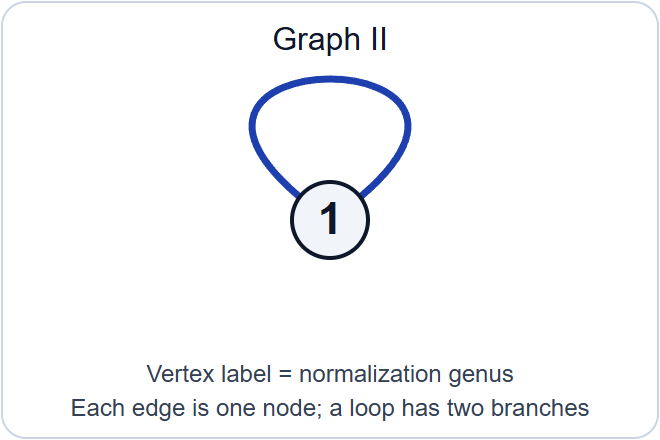
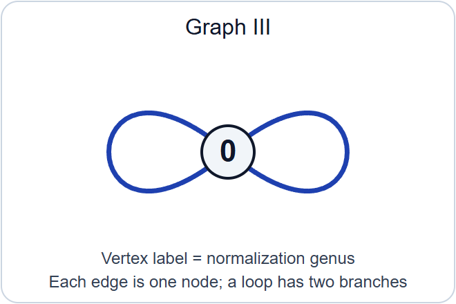

Stable reduction and properness
Written by GPT-6.1 Sol (OpenAI) in Codex, Ultra setting, October 2026. Self-checked by the writing AI. Public domain (CC0).
A smooth curve over the fraction field of a discrete valuation ring can acquire singularities at the closed point. A stable model records the limit by nodes and keeps every rational component sufficiently attached to the rest of the curve. Such a model may require a finite extension of the fraction field. Once it exists, its identification with the original generic curve determines it uniquely. Existence after extension and uniqueness together give properness of the stable-curve stack.
Lesson 9 proved that \(\overline{\mathcal M}_g\) is a smooth Deligne–Mumford stack, locally of finite presentation over \(\mathbb Z\), with separated finitely presented diagonal, and that its smooth-curve open \(\mathcal M_g\) is dense. Here \(g\geq2\). We prove global finite type, separatedness and properness. We prove stable reduction by the earlier curve semistable construction, stabilization and gluing over the finite integral closure. Surface resolution, minimal regular models and the numerical Picard estimates have their exact earlier programme route in the Néron-models lesson; stable-model uniqueness is proved here.
A prestable curve is proper, connected and nodal, with geometrically connected fibres in a family. A stable curve has ample dualizing line bundle. Families may have arbitrary scheme bases and algebraic-space total spaces. Over a field the proper curves considered here are schemes. A model of \(C/K\) includes a specified isomorphism between its generic fibre and \(C\); every isomorphism of models must respect that specification.
1. What a contraction preserves
1.1. Tails, bridges and the stable target
For a geometric nodal curve, let \(C_v\) be a component of its normalization, let \(g_v\) be its genus, and let \(n_v\) count the branches of nodes on it. A loop contributes two branches. Lesson 9 proved \[ \deg_{C_v}\omega_C=2g_v-2+n_v, \qquad g(C)=\sum_v g_v+|E|-|V|+1. \tag{1.1} \] A rational tail has \(g_v=0,n_v=1\); a rational bridge has \(g_v=0,n_v=2\). Removing a tail replaces its attaching node by a smooth point. Removing a bridge joins its two outside branches into a node. The two branches can belong to the same component, in which case the new node is a self-node. Repeating these operations terminates because each operation removes a component. The genus is unchanged by either operation: a tail removes one vertex and one edge, while a bridge removes one vertex and replaces two edges by one.
The ordinary individual-curve contraction theorem, in the exact form [Stacks, Tag 0E7Q], gives a morphism \[ c_0:C\longrightarrow C^{\mathrm{st}} \tag{1.2} \] to a stable curve of the same genus, characterized up to unique compatible isomorphism by \[ \mathcal O_{C^{\mathrm{st}}}\xrightarrow{\sim}(c_0)_*\mathcal O_C, \qquad R^1(c_0)_*\mathcal O_C=0. \tag{1.3} \] This field-level theorem includes descent when components or branches are not defined over the ground field. Its hypotheses are that \(C\) is proper, nodal, of dimension one, has \(H^0(C,\mathcal O_C)=k\), and has genus at least two. We use this ordinary curve result, not the relative stabilization assertion to be proved below.
Here is the mechanism behind (1.3). A regular function on a proper rational component is constant. On a tail that constant must equal the value at the attaching point. On a bridge it must equal both outside branch values. The bridge therefore imposes exactly the equality defining a node. On a chain of rational bridges the same equality propagates through every component. The normalization sequence expresses these conditions as differences of values at successive attaching points. That difference map is surjective, so it introduces no first cohomology. Thus a rational tree carries neither new functions nor new \(H^1\). Higher direct images vanish because the fibres have dimension at most one.
After all tails have been removed, the remaining bridges have dualizing degree zero. Contracting them preserves the dualizing bundle by pullback. The two stable targets then have the same canonical section ring, by the projection formula and (1.3). Each is the Proj of that ring because its dualizing bundle is ample. This explains why there is one stable target, independently of the order of contraction. The hypotheses in the individual-curve theorem matter: a genus-one component contracted to a point would contribute \(H^1\), and is excluded by (1.3).
1.2. The condition persists near a fibre
Proposition 1.1. Let \(X/S\) and \(Y/S\) be proper flat finitely presented families of curves, and let \(c:X\to Y\) be an \(S\)-morphism. Suppose at a point \(s\in S\) that \[ \mathcal O_{Y_s}\xrightarrow{\sim}(c_s)_*\mathcal O_{X_s}, \qquad R^1(c_s)_*\mathcal O_{X_s}=0. \tag{1.4} \] After shrinking \(S\) around \(s\), these equalities hold for \(c\), and continue to hold after every base change \(S'\to S\).
Proof. The assertion is étale local on \(S\). Lesson 9, Proposition 1.1, supplies étale covers on which both families are schemes. The morphism \(c\) is proper: its graph is closed in \(X\times_S Y\), and the projection to \(Y\) is proper. Its fibre over a point of \(Y_s\) has dimension at most one.
Use the ordinary cohomology neighbourhood theorem [Stacks, Tag 0E7L]. Its precise hypotheses are: the source is locally finitely presented and flat along \(X_s\), the target is locally finitely presented, the morphism is proper, its fibres over \(Y_s\) have dimension at most one, and (1.4) holds. It produces an open \(V\subset Y\) containing \(Y_s\) on which the two equalities hold universally under base changes of \(S\). The complement \(Y\setminus V\) has closed image under the proper morphism \(Y\to S\), and that image misses \(s\). Remove it. The entire remaining \(Y\) lies in \(V\).
Finally descend from the étale cover. For each \(S'\), the pullback cover is faithfully flat; the relevant structure-sheaf map is an isomorphism and the higher direct image is zero if they are so on that cover. This proves both the neighbourhood assertion and its universal form. \(\square\)
This proves [Stacks, Tag 0E88], including arbitrary base changes. Checking only geometric fibres, without this universal cohomology statement, would leave the later descent argument incomplete.
1.3. Recovering a target through infinitesimal thickenings
Lemma 1.2. Suppose \(c_0:X_0\to Y_0\) is a morphism of proper curves over a field \(k\), satisfying (1.3). For an Artinian local \(k\)-algebra, or an Artinian local algebra over a fixed coefficient ring with residue field \(k\), the functor \[ \operatorname{Def}(X_0\xrightarrow{c_0}Y_0) \longrightarrow\operatorname{Def}(X_0) \tag{1.5} \] is an equivalence of marked deformation groupoids. Here both schemes in a deformation of the arrow are flat over the Artinian algebra. The coefficient ring is kept fixed in all arrows.
Proof. Let \(A\) be such an algebra and let \(U/A\) be a deformation of \(X_0\). All nilpotent thickenings have the same underlying topological spaces as their special fibres. On the space \(Y_0\), define \[ \mathcal O_V=(c_0)_*\mathcal O_U. \tag{1.6} \] We justify that this is the structure sheaf of a flat deformation, rather than assuming it.
Induct on the length of \(A\), cutting by small ideals \(I\) annihilated by its maximal ideal. Flatness of \(U\) gives the exact sequence \[ 0\longrightarrow\mathcal O_{X_0}\otimes_k I \longrightarrow\mathcal O_U \longrightarrow\mathcal O_{U_{A/I}} \longrightarrow0. \tag{1.7} \] The first term has zero first direct image under \(c_0\), by (1.3); it also has zero higher direct images. Pushing forward (1.7), and using the induction hypothesis, gives \[ 0\longrightarrow\mathcal O_{Y_0}\otimes_k I \longrightarrow\mathcal O_V \longrightarrow\mathcal O_{V_{A/I}} \longrightarrow0, \qquad R^1(c_0)_*\mathcal O_U=0. \tag{1.8} \] The first injection is multiplication by elements of \(I\): this follows from the \(A\)-linear adjunction defining (1.6). Hence its image is \(I\mathcal O_V\). The square-zero flatness criterion, together with flatness modulo \(I\), proves that \(\mathcal O_V\) is \(A\)-flat. It also proves the required compatibility with reduction modulo \(I\).
The kernel sheaves in (1.8) are quasi-coherent on \(Y_0\). A nilpotent extension by such sheaves is a scheme: on an affine open of \(Y_0\), the sheaf is the sheaf associated to its section algebra, and these affine spectra glue on intersections. In this verification one uses the exact sequence (1.8) and vanishing of higher cohomology of its quasi-coherent kernel on that affine open. Stalks are local rings because the nilpotent quotient stalks are local. This constructs \(V\) and a morphism \(U\to V\) by adjunction. Finite presentation follows by lifting finitely many generators and relations through the nilpotent ideals; flatness identifies the kernel in (1.8), and the nilpotent form of Nakayama's lemma makes these lifts generate. Properness and separatedness follow from their invariance under nilpotent thickening. The target has dimension at most one, since its topology is that of \(Y_0\).
Conversely, take any flat deformation \(U\to W\) of \(c_0\). Apply (1.7) to both \(U\) and \(W\). Induction and the same direct-image sequence show that \[ \mathcal O_W\xrightarrow{\sim}(c_0)_*\mathcal O_U. \tag{1.9} \] It identifies \(W\), with its map from \(U\), with the construction (1.6). This proves essential surjectivity and uniqueness for each fixed \(U\).
An isomorphism \(U\to U'\) of marked source deformations pushes forward to an isomorphism of the algebras (1.6), hence induces an isomorphism \(V\to V'\) compatible with the arrows. Every compatible target arrow must be this one by (1.9). Composition is preserved because pushforward preserves composition of algebra maps. Thus (1.5) is fully faithful on all arrows, not just a bijection on isomorphism classes. The construction also commutes with reduction to every Artinian quotient. \(\square\)
This is the cohomological deformation equivalence underlying [Stacks, Tag 0E3X]. No smoothness assumption on the contraction is made.
2. Stabilization over an arbitrary base
2.1. Extending one fibre contraction
Proposition 2.1. Let \(X/S\) be a family of curves and \(s\in S\). Suppose \(c_0:X_s\to Y_0\) is a map to a proper scheme satisfying (1.3). There is an elementary étale neighbourhood \((U,u)\to(S,s)\), with \(\kappa(u)=\kappa(s)\), a family \(Y/U\), and a map \(X_U\to Y\) whose fibre is the given arrow \(c_0\).
Proof. We explain the approximation steps, including why no excellence assumption is imposed on the original base. Work first over an affine neighbourhood of \(s\). Express its ring as a filtered colimit of finitely generated \(\mathbb Z\)-algebras. Finite presentation descends \(X\), the field-level scheme \(Y_0\), and the arrow \(c_0\) to a finite stage, after increasing that stage to retain properness and flatness. The residue field is the corresponding filtered colimit of residue fields. The two equalities (1.3) descend at the chosen stage: flat base change along the faithfully flat residue-field extension identifies their maps and cohomology with the original ones. Thus it suffices to treat a base of finite type over \(\mathbb Z\).
Let \(\Lambda\) be the henselization of its local ring at \(s\), with maximal ideal \(\mathfrak m\) and residue field \(k\). This is a Noetherian henselian G-ring. For \(A_n=\Lambda/\mathfrak m^{n+1}\), the family gives compatible source deformations \(X_n\). Lemma 1.2 gives compatible target deformations \(Y_n\) and arrows \(X_n\to Y_n\). Compatibility includes their identifying isomorphisms and every cocycle, since the lemma is an equivalence of groupoids.
The target \(Y_0\) has dimension at most one: its structure sheaf embeds into the pushforward from \(X_s\), so it is the scheme-theoretic image. It is projective, by the ordinary projectivity theorem for proper curves. Choose an ample line bundle on it. Its obstruction to lifting to each next \(Y_n\) is in degree-two coherent cohomology on a space of dimension at most one, and is zero. We therefore choose compatible ample lifts. Formal existence for a proper polarized formal scheme [Stacks, Tag 089A] algebraizes this system to a projective scheme \(\widehat Y\) over \(\widehat\Lambda\). All its Artinian reductions are flat, so the formal flatness criterion proves flatness along the closed fibre. The flat locus is open; the complement has proper image in the local base and misses its closed point, so it is empty. The same argument gives the dimension bound. Thus \(\widehat Y\) is a family of curves.
The proper curve space \(X_{\widehat\Lambda}\) is a projective scheme by the ordinary theorem [Stacks, Tag 0AE7]. Formal full faithfulness for maps from a proper scheme to a separated finite-type scheme, [Stacks, Tag 0A42], algebraizes the compatible maps to \[ \widehat c:X_{\widehat\Lambda}\longrightarrow\widehat Y. \tag{2.1} \] Equivalently it algebraizes their graphs; projection from the algebraized graph is an isomorphism because that is true on every Artinian reduction. This verifies that the source in (2.1) is the prescribed source.
The finite-presentation data \(\widehat Y,\widehat c\) descend to a finitely generated \(\Lambda\)-subalgebra \(B\subset\widehat\Lambda\); properness and flatness descend after enlarging \(B\). Write \(B\) by finitely many generators and polynomial relations. The inclusion in the completion solves these relations. The approximation theorem for a Noetherian henselian G-ring [Stacks, Tag 07QY], used modulo \(\mathfrak m\), supplies a \(\Lambda\)-algebra map \[ B\longrightarrow\Lambda \tag{2.2} \] with the same residue-field map as the inclusion. Pullback along (2.2) gives a family and arrow over \(\Lambda\) with exactly the desired special fibre. Henselization is the filtered colimit of elementary étale neighbourhoods. Finite presentation descends this family, arrow and special-fibre identification to one such neighbourhood. Pulling back to the original base proves the proposition. \(\square\)
This proves the relative extension assertion [Stacks, Tag 0E7C]. Completion is a device inside the proof; the resulting neighbourhood lies over the original, possibly non-Noetherian base.
2.2. Comparing two targets
Lemma 2.2. Suppose \(c_i:X\to Y_i\), for \(i=1,2\), are maps of families over \(S\), and their fibres at \(s\) have a specified compatible isomorphism. If \(c_{1,s}\) satisfies (1.4), then, near \(s\), there is an isomorphism \(Y_1\to Y_2\) compatible with both maps and the specified fibre isomorphism. If \(\mathcal O_{Y_1}\to(c_1)_*\mathcal O_X\) is an isomorphism, this compatible isomorphism is unique.
Proof. Descend to a Noetherian local ring as in Proposition 2.1, also descending the fibre isomorphism. Its compatibility is an equality of finite-presentation arrows and therefore descends at a finite stage. The cohomology condition descends by faithfully flat field base change.
Over the completion, both arrows determine the same marked deformation of their common special-fibre arrow, with the same source on every Artinian quotient. Lemma 1.2 gives unique compatible isomorphisms between their target reductions. Formal full faithfulness (0A42), with projectivity over the complete base as in 0AE7, gives an actual compatible isomorphism of the targets over that completion.
To descend its existence, let \(Z\) be the scheme-theoretic image of \[ (c_1,c_2):X\longrightarrow Y_1\times_S Y_2. \tag{2.3} \] The map is proper, so its image is a closed algebraic subspace. Scheme-theoretic image commutes with flat base change. Over the completion, \(Z\) is the graph of the compatible isomorphism: the first map is schematically surjective by Proposition 1.1, and the two maps are identified by that isomorphism. Hence both projections \(Z\to Y_i\) become isomorphisms. Completion of a Noetherian local ring is faithfully flat, so both projections are already isomorphisms before completion. Finite presentation descends these isomorphisms from the local ring to an open neighbourhood of \(s\), and then back through the earlier limit reduction.
For uniqueness, two compatible maps \(Y_1\to Y_2\) have a closed equalizer because \(Y_2/S\) is separated. Its pullback contains all of \(X\). The injection \(\mathcal O_{Y_1}\to(c_1)_*\mathcal O_X\) forces its defining ideal to be zero. Therefore the equalizer is all of \(Y_1\). This also proves uniqueness on nonreduced bases. \(\square\)
This supplies the comparison assertion [Stacks, Tag 0E89] and the uniqueness step needed for gluing.
2.3. The stabilization functor
Theorem 2.3. Every prestable family \(X/S\) of genus \(g\geq2\) has a stable family \(X^{\mathrm{st}}/S\) and a morphism \[ c:X\longrightarrow X^{\mathrm{st}} \tag{2.4} \] whose geometric fibres contract rational tails and bridges. It satisfies \(\mathcal O_{X^{\mathrm{st}}}=c_*\mathcal O_X\) and \(R^1c_*\mathcal O_X=0\), universally under arbitrary base change. It is unique up to unique compatible isomorphism, and formation of (2.4) commutes with every base change.
Proof. At each \(s\), apply the individual-curve theorem to \(X_s\). Its hypotheses hold because a geometrically connected nodal proper curve has \(H^0=\kappa(s)\). Proposition 2.1 extends its contraction étale locally. The target's special fibre is stable. Lesson 9, Theorem 5.2 and Corollary 5.3, give a neighbourhood on which the target family is stable of genus \(g\). Proposition 1.1 then gives the universal cohomology equalities. On every other fibre these equalities, together with stability of the target, characterize the individual-curve contraction by 0E7Q.
For any two such local constructions, the individual fibre contractions have a unique compatible identification. Lemma 2.2 produces the compatible isomorphism locally near each base point. Proposition 1.1 and the uniqueness part of Lemma 2.2 show that these local isomorphisms agree wherever they overlap. They therefore give a global isomorphism on the overlap of the original étale neighbourhoods. On a triple overlap their composites agree with the direct comparison, again by uniqueness. Effective étale descent of the stable-family stack gives \(X^{\mathrm{st}}\), and descent of the compatible maps gives \(c\). Both the fibre description and the universal cohomology assertions descend.
For any \(S'\to S\), the pullback of (2.4) has those same properties. Uniqueness identifies it with the stabilization constructed over \(S'\). These identifications obey all composition and cocycle identities by uniqueness. An isomorphism between source families induces a unique isomorphism of their stable targets; its compatibility with composition has the same proof. Thus stabilization is a morphism of stacks, not merely an operation on geometric points. \(\square\)
This proves [Stacks, Tag 0E8A], in the arbitrary-base form. It also explains the contraction discussion in [Stacks, Tag 0E7B].
3. Stable models are unique
3.1. The ordinary surface inputs
Let \(R\) be a discrete valuation ring, with uniformizer \(\pi\), fraction field \(K\) and residue field \(k\). We use the following ordinary facts about surfaces fibred over this trait.
- A smooth proper curve \(C/K\) with \(H^0(C,\mathcal O_C)=K\) has a proper minimal regular model. A minimal regular model has no exceptional curve of the first kind. It is unique, respecting its generic marking, when \(g(C)>0\). These are [Stacks, Tags 0C2W and 0C6B].
- A proper nodal model with smooth generic fibre is resolved by finitely many blowups at singular closed points; every intermediate model is again nodal. This is [Stacks, Tag 0CDE], with the local computation in 0CDC. A regular proper model maps to a minimal regular model by finitely many contractions of exceptional curves of the first kind, [Stacks, Tag 0CD9].
- Such a contraction from a regular nodal model again gives a nodal model, [Stacks, Tag 0CDF]. Consequently the existence of any nodal model implies that the minimal regular model is nodal, [Stacks, Tag 0CDG].
These inputs concern regular surfaces and their birational modifications. They do not assert uniqueness of stable models. We next prove the fibre cohomology statement needed to pass from them to that uniqueness.
3.2. Cohomology of the exceptional fibres
Lemma 3.1. For each modification in input 2 or 3, its restriction \(b_0:D'\to D\) to the closed fibre satisfies \[ \mathcal O_D\xrightarrow{\sim}(b_0)_*\mathcal O_{D'}, \qquad R^1(b_0)_*\mathcal O_{D'}=0. \tag{3.1} \] These assertions are stable under compositions of the modifications.
Proof. We may test the assertions étale locally and then after a faithfully flat extension of the residue field. At a singular closed point of a nodal model with smooth generic fibre, the surface has the étale local form \[ xy=\pi^n, \qquad n\geq2, \tag{3.2} \] with a unit absorbed into one coordinate. Blow up the ideal \((x,y,\pi)\). Its three charts have equations \[ x'y'=\pi^{n-2},\qquad xu=\pi,\qquad yv=\pi; \quad x'=x/\pi,\ y'=y/\pi,\ u=\pi/x,\ v=\pi/y. \tag{3.3} \] For example the \(x\)-chart also contains \(y/x=u^2\pi^{n-2}\), so (3.3) gives the full chart, rather than only a relation on it. If \(n=2\), the exceptional fibre is the smooth conic \(XY=\Pi^2\) in the projectivized tangent cone, hence a rational curve. If \(n>2\), it is the pair of lines \(XY=0\). The strict transforms of the two old branches attach at the two outer ends. Thus the closed-fibre modification replaces one node by a chain of one or two projective rational curves, with the old branches at its ends. The central chart has reduced the remaining surface exponent by two, explaining the termination of resolution in the ordinary surface input.
Compute on an affine neighbourhood of the old node after splitting its branches. The old ring is \(k[x,y]/(xy)\), with functions \[ k[x]\times_k k[y] =\{(a(x),b(y)):a(0)=b(0)\}. \tag{3.4} \] The new curve consists of the same two affine branches and a chain \(E_1,\ldots,E_r\) of projective lines. A function on each \(E_i\) is a constant \(e_i\). The normalization sequence requires \[ a(0)=e_1=e_2=\cdots=e_r=b(0). \tag{3.5} \] Its kernel is exactly (3.4). Its difference map onto the \(r+1\) node values is surjective: choose the successive constants to meet any prescribed differences, starting from an arbitrary first branch value, then choose the last branch value. Since both affine branches and all \(E_i\) have zero \(H^1\), the same exact sequence gives zero \(H^1\) on this inverse image. Away from the node the map is an isomorphism. Localizing (3.4)–(3.5) and applying étale flat base change proves both sheaf assertions in (3.1). This includes non-split original nodes by faithful flat descent.
For a contraction of an exceptional curve from a regular nodal model, its exceptional curve is a rational tail in the reduced special fibre. Indeed the fibre divisor \(F\) has multiplicity one on every component. On the exceptional projective line, of self-intersection degree \(-1\), \[ 0=F\cdot E=E^2+(F-E)\cdot E \tag{3.6} \] shows that the total attaching degree is one, computed over the constant field of \(E\). Nodal intersections have positive degree, so there is one attaching point, rational over that field. The contracted point is smooth on the resulting special fibre: the uniformizer has order one on \(E\), so it lies in the maximal ideal of the regular target surface but not its square; its quotient is a regular curve local ring. The attaching-point residue extension is separable, which gives geometric smoothness there. This is also the local explanation of input 3.
The normalization calculation for a tail is the version of (3.5) with one affine branch and one constant. Its difference map to the attaching-point value is surjective, its kernel is the original branch ring, and it has zero first cohomology. This proves (3.1) for that contraction.
Finally the Leray spectral sequence for a composite gives its degree-zero direct image and vanishing in degree one from those of its factors. No higher direct images occur, because the fibres have dimension at most one. Thus (3.1) is stable under composition. \(\square\)
3.3. The uniqueness theorem
Theorem 3.2. Let \(C/K\) be a smooth proper curve with \(H^0(C,\mathcal O_C)=K\). If \(X/R\) and \(X'/R\) are stable models of genus \(g\), there is a unique isomorphism of models \[ X\xrightarrow{\sim}X'. \tag{3.7} \] In particular the existence of the models forces \(g\geq2\).
Proof. Let \(Y/R\) be the minimal regular model of \(C\). It exists and is unique by input 1. Because \(X\) is a nodal model, inputs 2–3 show that \(Y\) is nodal. It is a prestable family of genus \(g\). One can see connectedness precisely as follows: a nodal model with smooth generic fibre is normal, as the local surface equations \(xy=\pi^n\) are normal. Its global functions are integral over \(R\) and lie in \(H^0(C,\mathcal O_C)=K\), hence equal \(R\). Stein factorization gives geometrically connected fibres; the nodal fibres are geometrically reduced. Flatness and constancy of Euler characteristic then give genus \(g\). This also applies to the intermediate nodal models below.
Theorem 2.3 stabilizes \(Y\) to \(Z/R\). Its generic contraction is the identity on the already stable smooth curve \(C\), so \(Z\) is a marked model of \(C\).
Resolve \(X\) by input 2, and then contract to the minimal regular model: \[ D=X_m\longrightarrow\cdots\longrightarrow X_0=X, \qquad D=Y_n\longrightarrow\cdots\longrightarrow Y_0=Y. \tag{3.8} \] Every curve in the two closed-fibre chains is nodal. Lemma 3.1 and the stabilization theorem show that both maps \[ D_k\longrightarrow X_k, \qquad D_k\longrightarrow Y_k\longrightarrow Z_k \tag{3.9} \] preserve the structure sheaf and have zero first direct image. Their targets are stable. The individual-curve characterization (0E7Q) therefore gives a unique isomorphism \(X_k\cong Z_k\) compatible with these two maps.
Apply Lemma 2.2 to the maps \(D\to X\) and \(D\to Z\). It gives a compatible isomorphism near the closed point of \(\operatorname{Spec}R\). An open neighbourhood of that closed point is the entire trait. Thus \(X\cong Z\) over \(R\), and compatibility with \(D\) makes this an isomorphism respecting the generic marking. Repeating the argument for \(X'\) gives \(X'\cong Z\), hence (3.7).
For uniqueness of (3.7), the generic fibre of a flat scheme or algebraic space over a trait is schematically dense: locally, a function that becomes zero after inverting \(\pi\) is \(\pi\)-torsion and is zero by flatness. The equalizer of two \(R\)-maps to the separated space \(X'\) is closed. If the maps agree on the marked generic fibre, schematic density makes their equalizer all of \(X\). They therefore agree. \(\square\)
This is the full stable-model uniqueness assertion [Stacks, Tag 0E97]. A generic curve may have nontrivial automorphisms. They do not contradict the theorem: changing the chosen generic marking changes the comparison problem. With both markings fixed, the generic comparison is fixed.
4. Stable reduction over an arbitrary discrete valuation ring
4.1. The theorem and the semistable construction
Theorem 4.1 (stable reduction). Let \(R\) be a discrete valuation ring with fraction field \(K\). Let \(C/K\) be smooth and proper, with \(H^0(C,\mathcal O_C)=K\) and genus \(g\geq2\). For a suitable finite separable extension \(L/K\), the integral closure \(A\) of \(R\) in \(L\) is finite over \(R\) and carries a stable family whose generic fibre is identified with \(C_L\). In particular each localization \(A_{\mathfrak m}\) at a maximal ideal supplies a discrete valuation ring lying over the closed point and a marked stable model there.
No completeness, henselianity, excellence, or residue-field perfection is required. The field extension is part of the conclusion. For a smooth proper curve, the hypothesis on global functions implies geometric connectedness: flat field base change gives \(H^0(C_{\overline K},\mathcal O)=\overline K\), so there are no nontrivial idempotents and no decomposition into components.
The proof uses the curve semistable construction in Néron models, the seventh lesson of Group schemes and abelian varieties, Lemma 8.18 and the proof of Theorem 8.19. That theorem is about abelian varieties; its proof contains the precise curve construction needed here. We spell out how its Picard-torsion and numerical-genus estimates force a nodal curve, then prove stabilization and simultaneous gluing over \(A\).
The earlier curve construction uses a minimal regular model, its numerical intersection type, the prime-to-characteristic Picard bound, and the two genus inequalities with their equality cases. These are the exact regular-model and numerical foundations retained by that existing Néron-models lesson. They include arbitrary discrete valuation rings and imperfect residue fields. Its new Lemma 8.18 supplies the long weighted-chain and fork cases omitted in the native numerical estimate. The current proof is written; the internal proofs of its retained regular-model, numerical-classification, Picard and formal-functions foundations remain planned where not yet supplied. The argument below is relative to that genuine earlier programme obligation, rather than to an external stable-reduction statement.
4.2. From torsion to nodes, stabilization and gluing
Proof. Choose a prime \(\ell>768g\) different from the characteristic of the residue field of \(R\). Such a prime is invertible in \(R\), and therefore also in every discrete valuation ring lying above it.
The Picard-torsion visibility component gives a finite separable extension \(L/K\) such that \[ C(L)\neq\varnothing,\qquad \operatorname{Pic}(C_L)[\ell] \simeq(\mathbb Z/\ell\mathbb Z)^{2g}. \tag{4.1} \] This is one choice of field, made before selecting any extension of the valuation. Geometric connectedness and genus \(g\) persist under \(L/K\).
We first verify the integral-closure assertion at this generality. Choose a \(K\)-basis \(\alpha_1,\ldots,\alpha_d\) of \(L\), multiplying its members by suitable nonzero elements of \(R\) so that every \(\alpha_i\) is integral over \(R\). If \(x\in A\), then \(x\alpha_i\) is integral over \(R\), and \(\operatorname{Tr}_{L/K}(x\alpha_i)\) is integral over \(R\) and belongs to \(K\). Since \(R\) is integrally closed, \[ \operatorname{Tr}_{L/K}(x\alpha_i)\in R \quad\text{for all }i. \] The trace pairing is nondegenerate because \(L/K\) is separable. Thus \(A\) is contained in the trace-dual lattice of the finite free \(R\)-module \(\sum_i R\alpha_i\). That dual lattice is finite free over \(R\), and its submodule \(A\) is finite because \(R\) is Noetherian. Consequently \(A/R\) is finite. It is a normal one-dimensional domain. Every nonzero prime is maximal, its local ring is a discrete valuation ring, and there are finitely many maximal ideals, all lying above the maximal ideal of \(R\). Moreover \(A[1/\pi]=L\), for a uniformizer \(\pi\) of \(R\). This proves that \(A\) is semilocal and Dedekind, without an excellence hypothesis.
Fix a maximal ideal \(\mathfrak m\) of \(A\), and write \[ V=A_{\mathfrak m},\qquad F=L,\qquad k_V=V/\mathfrak mV. \] We now prove nodal reduction over \(V\). The argument uses only (4.1), the inequality on \(\ell\), and the ordinary regular-model components listed above; it can therefore be repeated at every maximal ideal of the same \(A\).
Let \(X/V\) be a minimal regular proper model of \(C_L\), and write its special fibre as \[ X_{k_V}=\sum_i m_i C_i. \] Let \(T\) be its numerical type, \(t=g_{\rm top}(T)\) its topological genus, and \[ D=(X_{k_V})_{\rm red},\qquad h=\dim_{k_V}H^1(D,\mathcal O_D),\qquad c=g_{\rm geom}(X_{k_V}/k_V). \] Here \(c\) is the sum of the genera of the geometric normalizations, in the numerical conventions of the written genus inequalities. These definitions do not assume that \(k_V\) is perfect.
A point of \(C_L(L)\) extends to a section of \(X/V\) by properness. At its special point, the image of a uniformizer cannot lie in the square of the maximal ideal of the regular local ring: the section sends it to a uniformizer of \(V\). Quotienting by that parameter gives a regular local ring of the special fibre, with rational residue field, hence a smooth point. In particular its component has multiplicity one and constant field \(k_V\). The written rational-point lemma then gives \[ \gcd(m_i)=1,\qquad H^0(X_{k_V},\mathcal O)=k_V,\qquad \dim_{k_V}H^1(X_{k_V},\mathcal O)=g. \tag{4.2} \]
The numerical Picard bound, including the completed long cases in the Néron-models lesson, Lemma 8.18, gives \[ \dim_{\mathbb F_\ell}\operatorname{Pic}(T)[\ell]\leq t. \tag{4.3} \] The vertical-divisor sequence is exact at its first two nonzero terms: \[ 0\longrightarrow\operatorname{Pic}(X)[\ell] \longrightarrow\operatorname{Pic}(C_L)[\ell] \longrightarrow\operatorname{Pic}(T)[\ell]. \tag{4.4} \] Its coprimality condition is satisfied by (4.2). The specialization map \(\operatorname{Pic}(X)[\ell]\to\operatorname{Pic}(D)[\ell]\) is injective because \(\ell\) is invertible in \(V\). Combining (4.1), (4.3) and (4.4) yields \[ \dim_{\mathbb F_\ell}\operatorname{Pic}(D)[\ell] \geq 2g-t. \tag{4.5} \]
For clarity, the specialization injection has actual content. Prime-to-characteristic torsion is unchanged under nilpotent thickenings. A torsion line bundle trivial on \(D\) is therefore trivial on every infinitesimal special fibre. Formal functions makes its module of sections have completion isomorphic to \(V^\wedge\), hence be free of rank one over the DVR. A generating section is a trivialization on every infinitesimal fibre. Its vanishing set is closed and has proper image in \(\operatorname{Spec}V\); if nonempty, that image would contain the closed point, contrary to the infinitesimal trivializations. The section is therefore nowhere zero.
The reduced-curve torsion bound and the two genus inequalities now say \[ 2g-t\leq h+c,\qquad g\geq h\geq t+c. \tag{4.6} \] Put \(a=g-h\) and \(b=h-t-c\). Both are nonnegative, and the first inequality in (4.6) becomes \(2a+b\leq0\). Thus \[ g=h=t+c, \tag{4.7} \] and equality holds throughout (4.6).
The strictness part of the first genus inequality says that \(h<g\) whenever the minimal special fibre is nonreduced. Hence (4.7) forces \(m_i=1\) for every \(i\). The equality part of the second genus inequality says that the component through the rational smooth point is smooth geometrically integral over \(k_V\), and every other component is smooth over a finite separable constant-field extension of \(k_V\). Consequently the geometric special fibre \[ E=X_{\overline{k_V}} \] is reduced, connected and proper of dimension one. The separability assertion is the step that prevents any implicit residue-field-perfection assumption.
Prime-to-characteristic Picard torsion injects after extending the field. The equality of genera in (4.7), together with (4.5), gives \[ \dim_{\mathbb F_\ell}\operatorname{Pic}(E)[\ell] \geq \dim_{\overline{k_V}}H^1(E,\mathcal O_E) +g_{\rm geom}(E). \tag{4.8} \] The general reduced-curve torsion bound is the reverse inequality. Its equality case therefore applies: the singularities of \(E\) are multicross singularities.
The fibre of a regular surface is Gorenstein, and the written Gorenstein base-change theorem makes \(E\) Gorenstein. A singular multicross with \(r\geq2\) branches has completed local ring \[ B=\overline{k_V}[[x_1,\ldots,x_r]] /(x_i x_j\mid i\ne j). \] The element \(q=x_1+\cdots+x_r\) is a nonzerodivisor. In \(B/(q)\), multiplying the relation \(q=0\) by each \(x_i\) kills \(x_i^2\). The maximal ideal thus has square zero and has dimension \(r-1\), since its only linear relation is \(\sum_i x_i=0\). It is exactly the socle. A Gorenstein one-dimensional local ring modulo a parameter is Artinian Gorenstein, so its socle has dimension one. Therefore \(r-1=1\), and \(r=2\). Its completed ring is the ordinary node \(\overline{k_V}[[x,y]]/(xy)\). Thus \(X/V\) is a prestable family of genus \(g\), with its original generic marking.
Apply the stabilization functor of Theorem 2.3: \[ X\longrightarrow Y_{\mathfrak m} \longrightarrow\operatorname{Spec}A_{\mathfrak m}. \] The second morphism is a stable family of genus \(g\). Its generic fibre is unchanged: a smooth genus-\(g\) curve with \(g\geq2\) has no rational tail or bridge to contract. Hence it retains a specified identification \((Y_{\mathfrak m})_L\simeq C_L\). This proves stable reduction at every maximal ideal of the same \(A\).
It remains to make a single family over \(A\). Write its maximal ideals as \(\mathfrak m_1,\ldots,\mathfrak m_n\). By the Chinese remainder theorem choose \(s_i\) which lies in every \(\mathfrak m_j\), \(j\ne i\), and is a unit at \(\mathfrak m_i\). Then \[ U_i=D(s_i)=\operatorname{Spec}A_{\mathfrak m_i}, \qquad U_i\cap U_j=\operatorname{Spec}L\quad(i\ne j). \] The \(U_i\) cover \(\operatorname{Spec}A\). On their intersections, use the chosen generic markings to identify the two stable families with \(C_L\). These identifications satisfy the cocycle condition, so ordinary gluing produces \(Y/A\). Properness, flatness and finite presentation are local on the base, as is the stable-fibre condition. They therefore hold for \(Y/A\). Its generic marking is the common marking \(Y_L\simeq C_L\), completing the proof. \(\square\)
Marked uniqueness is the separate already written Theorem 3.2. It makes the glued model canonical relative to its generic marking, but it was not used to manufacture an existence proof.
This is the finite-separable formulation of [Stacks, Tag 0E98], with the semistable construction at [Tag 0CDM]. The mathematical source is the Stacks Project authors, read through the AI Integrated Stacks Project at revision 565b10e987aba5969b21145a0833f42d69f96790, especially Semistable Reduction and Algebraic Curves. The numerical predecessor locators and their current programme correspondence are retained in the source record. The new trace-lattice, stabilization and semilocal-gluing exposition is independently written programme text.
Deligne and Mumford's original stable-reduction statement is Corollary (2.7). Its finite algebraic extension wording and historical Jacobian argument are distinct from the precise modern finite-separable formulation proved here.
5. A finite-type parameter space
Local finite presentation of a moduli stack does not bound the number of charts needed to cover it. For fixed genus the tricanonical bundle supplies that bound.
5.1. The complete tricanonical series
Lemma 5.1. For a stable curve \(C/k\) of genus \(g\geq2\), \(\omega_C^{\otimes3}\) is very ample and \[ H^1(C,\omega_C^{\otimes3})=0, \qquad h^0(C,\omega_C^{\otimes3})=5g-5. \tag{5.1} \] Its complete linear series embeds \(C\) in \(\mathbb P^{5g-6}_k\) with Hilbert polynomial \[ P(n)=(6g-6)n+1-g. \tag{5.2} \]
Proof. All assertions can be tested after an algebraic closure, so take \(k\) algebraically closed. For each connected reduced subcurve \(D\subset C\), let \(h=p_a(D)\), and let \(b\) count the nodes where \(D\) meets its complementary subcurve. Normalization and the residue description of the dualizing sheaf give \[ d_D=\deg(\omega_C|_D)=2h-2+b. \tag{5.3} \] It is positive, because \(\omega_C\) is ample on every component. If \(D\ne C\), connectedness gives \(b\geq1\). We claim \(3d_D>2h\). For \(h=0\), positivity gives \(d_D\geq1\). For \(h=1\), \(d_D=b\geq1\). For \(h\geq2\), \(d_D\geq2h-1\). Each case proves the claim. If \(D=C\), it says \(6g-6>2g\), which holds for \(g\geq2\).
Let \(Z\subset C\) have length two, with ideal \(I_Z\), and set \(L=\omega_C^{\otimes3}\). The following elementary duality test applies to reduced nodal curves: if \(H^1(C,I_ZL)\ne0\), there is a connected reduced subcurve \(D\) such that \[ \deg(L|_D)\leq2p_a(D)-2+\operatorname{length}(Z\cap D). \tag{5.4} \] For completeness, Serre duality gives a nonzero map \(I_ZL\to\omega_C\). Take the union of components on which it is generically nonzero, and then a connected component \(D\) of that union. The map factors through the dualizing module \(\omega_D\); the kernel of restriction to \(I_{Z\cap D}L|_D\) is supported at finitely many points and maps to zero in the Cohen–Macaulay module \(\omega_D\). This gives an injection \[ I_{Z\cap D}L|_D\longrightarrow\omega_D \tag{5.5} \] with zero-dimensional cokernel. Its nonnegative Euler characteristic, and Riemann–Roch on \(D\), give exactly (5.4). This is the duality calculation of [Stacks, Tag 0E3E], with all its reduced, proper, connected hypotheses satisfied.
But \(\operatorname{length}(Z\cap D)\leq2\), while (5.3) gives \(\deg(L|_D)=3d_D>2h\). This contradicts (5.4). Therefore \(H^1(C,I_ZL)=0\), and the restriction \(H^0(C,L)\to H^0(Z,L|_Z)\) is surjective for every length-two subscheme. The ordinary length-two criterion for very ampleness proves that \(L\) is very ample. Taking \(Z\) empty in the same duality argument, or using \(H^0(C,\omega_C^{-2})=0\), gives \(H^1(C,L)=0\).
Finally Riemann–Roch gives \(\chi(L)=3(2g-2)+1-g=5g-5\), proving (5.1). Applying it to \(L^{\otimes n}\) gives (5.2). Both conclusions descend from the algebraic closure. \(\square\)
This also proves the tricanonical assertion [Stacks, Tag 0E8X]. The projective dimension is \(P(1)-1\), since the polarization used in (5.2) is already the third power of the dualizing bundle.
For a stable family \(f:C\to S\), the relative dualizing bundle commutes with all base changes, by Lesson 9. The fibrewise vanishing in (5.1), proper cohomology and base change give a vector bundle \[ E=f_*\omega_{C/S}^{\otimes3} \tag{5.6} \] of rank \(r=5g-5\), commuting with arbitrary base change. This assertion includes nonreduced and non-Noetherian bases. One way to check it is to descend the family locally to a Noetherian base, represent its cohomology by the usual finite free complex, and use the vanishing of degree-one fibre cohomology to split the last differential. Its degree-zero kernel is then finite locally free and remains the kernel after every pullback. The resulting statement pulls back to the original base.
Evaluation \(f^*E\to\omega^{\otimes3}\) is surjective by the fibrewise assertion and Nakayama's lemma. It gives a morphism \[ C\longrightarrow\mathbb P_S(E). \tag{5.7} \] It is a closed immersion. Indeed it is proper, and its geometric fibres are closed immersions, so it is quasi-finite and hence finite. The cokernel of the map from the target structure sheaf to its finite direct image vanishes on every fibre and is finitely generated; Nakayama's lemma makes it zero. This proves closed immersion, including over nonreduced bases, using finite-presentation descent if necessary.
5.2. Hilbert data with a frame
Proposition 5.2. The stack \(\overline{\mathcal M}_g\) is quasi-compact and of finite type over \(\mathbb Z\).
Proof. Put \(N=5g-6\), and let \[ H=\operatorname{Hilb}_{P}(\mathbb P^N_{\mathbb Z}), \quad P(n)=(6g-6)n+1-g. \tag{5.8} \] The fixed-polynomial projective Hilbert scheme theorem is the ordinary prerequisite proved in the Hilbert course and used in Lesson 8: \(H\) is projective and of finite type over \(\mathbb Z\). Its universal family is proper and flat. The open locus \(H^{\mathrm{st}}\) where that family is a stable genus-\(g\) curve is open by Lesson 9. Since \(H\) is Noetherian, this open is quasi-compact and of finite type.
Over \(H^{\mathrm{st}}\), parameterize an isomorphism \[ \alpha:\mathcal O_C(1)\xrightarrow{\sim}\omega_{C/H^{\mathrm{st}}}^{\otimes3}. \tag{5.9} \] Lesson 8's sheaf-Hom and sheaf-Isom construction applies: both sheaves are finitely presented and flat over the base, with proper support. It gives an affine finitely presented Isom scheme over \(H^{\mathrm{st}}\). Retain its open locus \(Q\) where the coordinate restrictions, transported by \(\alpha\), give an isomorphism \[ \mathcal O^{N+1}\xrightarrow{\sim} f_*\omega_{C}^{\otimes3}. \tag{5.10} \] The determinant of this map between rank-\(N+1\) vector bundles tests the condition. The scheme \(Q\) is again of finite type over \(\mathbb Z\).
Its family defines \(Q\to\overline{\mathcal M}_g\). For a specified stable family \(X/S\), the fibre product with \(Q\) is exactly the frame bundle of \(f_*\omega_{X/S}^{\otimes3}\). A frame gives the closed immersion (5.7) into \(\mathbb P^N_S\), its Hilbert point, and the tautological identification (5.9). Conversely that point and identification recover the frame by (5.10). These constructions are inverse on every \(S'\to S\), including their prescribed identification of the abstract family with the Hilbert family. They therefore identify the whole fibre product, not just its geometric points.
This also explains why (5.9) was retained. Multiplying a frame by a common scalar leaves the projective embedding unchanged, but multiplies \(\alpha\); the scalar information must be present to recover the frame exactly. The fibre product is a torsor under \(\operatorname{GL}_{N+1}\), hence a smooth surjective finitely presented scheme over \(S\). Consequently \(Q\to\overline{\mathcal M}_g\) is a representable smooth surjection.
A finite-type scheme is quasi-compact, so this surjection proves quasi-compactness of the stack. It was already locally of finite presentation over \(\mathbb Z\); quasi-compactness makes the structural morphism of finite type. \(\square\)
This proves [Stacks, Tag 0E9B]. The construction even gives the quotient presentation \(\overline{\mathcal M}_g\simeq[Q/\operatorname{GL}_{5g-5}]\), by the frame-torsor equivalence proved in Lesson 5. We only need its finite-type consequence.
6. The properness theorem
6.1. The precise valuative input
We prove the dense-test-locus valuative criterion at its full separated finite-type scope. Its proof constructs a proper algebraic-space cover of the stack and then keeps the prescribed generic isomorphism while returning through each comparison.
All stack products are 2-fibre products. A valuation ring may have arbitrary rank; a field extension need not be finite, algebraic or separable. “Dominates” means that the inclusion is local and its maximal ideal contracts to that of the smaller local ring.
Theorem 6.0 (the refined valuative criterion). Let \(\mathcal U\xrightarrow h\mathcal X\xrightarrow f\mathcal Y\) be morphisms of algebraic stacks. Assume \(\mathcal Y\) locally Noetherian, \(f,h\) of finite type, \(f\) separated, and \(|h|(\mathcal U)\) dense in \(|\mathcal X|\). Suppose the following test holds. For every DVR \(A\) with fraction field \(K\), maps \(u:\operatorname{Spec}K\to\mathcal U\), \(y:\operatorname{Spec}A\to\mathcal Y\), and every specified isomorphism \[ \gamma:yj\xrightarrow{\sim}fhu, \qquad j:\operatorname{Spec}K\hookrightarrow\operatorname{Spec}A, \] there are an extension \(K'/K\), a valuation ring \(A'\subset K'\) dominating \(A\), and a filler for the induced square. Then \(f\) is proper.
A filler is a map \(z:\operatorname{Spec}A'\to\mathcal X\), isomorphisms \(\beta:fz\xrightarrow{\sim}y'\) and \(\alpha:zj'\xrightarrow{\sim}x'\), where \(y'\) and \(x'\) are the respective pullbacks of \(y\) and \(hu\), satisfying \[ f\alpha=\gamma'\circ(\beta j'). \tag{A.1} \] Composition associators are understood. Thus the given generic comparison is part of the test. An unrelated specialization of the same geometric point would not suffice. Neither \(A'\) nor any subsequent dominating valuation ring is required to be discrete. Section 6.1.7 proves the theorem; §§6.1.1–6.1.6 construct its support.
The quotient inputs are Lesson 2, Theorem 4.1 and Corollary 4.2; presentations and object/isomorphism descent are Lessons 4 and 5, Theorem 3.3. The valuation inputs are Lesson 3, Lemmas 5.1 and 5.5–5.6 and Theorem 5.7. In particular, the arbitrary-extension push-down uses the localization \((A\setminus\{0\})^{-1}A'\), which need not be the larger fraction field. Lesson 3, §5.6 supplies space Chow, quasi-coherent extension, finite hulls, strict-transform flattening, blowup comparisons and same-function-field DVR domination. The extra finite-hull scope needed for finite covers of opens is proved in D.0 below.
Ordinary morphism descent is Descending properties of schemes and morphisms (AG-DFG-03), Theorem 2.1 and Propositions 3.1–3.2, whose written proofs cover target-fpqc, source-flat and source-fppf descent at the scopes used here. The ordinary field, local flatness and étale inputs are Krull dimension and Noether normalization in Commutative algebra for geometry, §2, and Flat morphisms (AG-FSE-01), §7, Flatness criteria, dimension and the flat locus (AG-FSE-02), §§1 and 5, Étale morphisms and their local structure (AG-FSE-04), §§2–4, and Étale neighbourhoods, henselization and quasi-finite morphisms (AG-FSE-07), §4. Their existing prerequisite contracts are retained.
The nonaffine scheme finite-hull foundation is Zariski’s Main Theorem (AG-MO-12), Theorem 4.1, whose full proof remains genuinely assigned; its affine Theorem 3.2 and proper quasi-finite Theorem 5.1 are written. Scheme approximation is Limits of schemes and approximation (AG-MO-03), including its still planned prescribed-open Theorem 5.2. Scheme blowup charts and universal properties are Blowups (AG-MO-16). These are genuine planned foundations where the selected edition has not yet written their complete proofs. The stack gerbe, finite-choice, stack Chow and refined space arguments required for this criterion are proved here.
6.1.1. A dense open gerbe
C.1. Flat inertia gives a gerbe over a space. Let \(\mathcal T\) have flat locally finitely presented inertia. Choose a smooth atlas \(E\to\mathcal T\), let \(R=E\times_{\mathcal T}E\), and write \(s,t\colon R\rightrightarrows E\) and stabilizer \(G\to E\). An arrow \(r\) goes from \(s(r)\) to \(t(r)\). The flat locally finitely presented group \(G\to E\) acts on the \(E\)-space \((R,t)\) by postcomposition. Its action domain is \(G\times_ER=t^*G\), and the action is \((g,r)\mapsto g\circ r\). It is an action over the target endpoint \(E\), and is free since \(g\circ r=r\) implies \(g=1\). AG-AS-02, Corollary 4.2 supplies its space quotient \(R_0=R/G\) and a flat locally finitely presented surjection \(R\to R_0\).
Endpoints descend, and their maps to \(E\) are flat locally finitely presented by faithfully flat descent. The map \(R_0\to E\times E\) is a monomorphism: locally lift two arrows with the same endpoints; their quotient \(r_2r_1^{-1}\) is the unique automorphism of their common target, so their classes agree. Reflexivity and symmetry descend from unit/inverse. For transitivity lift two classes fppf locally to composable arrows; their composite gives the desired class, uniquely by this monomorphism. Thus \(R_0\rightrightarrows E\) is a flat locally finitely presented equivalence relation. AG-AS-02, Theorem 4.1 gives \(T=E/R_0\).
The induced map \(q:\mathcal T=[E/R]\to T\) is a gerbe. Objects exist locally through the fppf cover \(E\to T\). Two objects with equal image locally lift to \(E\); their endpoints give a point of \(R_0=E\times_TE\), and after the cover \(R\to R_0\) they are isomorphic. Both gerbe axioms are therefore verified with their full arrow sheaves.
The space \(T\) is canonically the fppf sheafification of isomorphism classes of \(\mathcal T\): local existence makes the class map locally surjective, and local isomorphism makes it locally injective. Any map from \(\mathcal T\) to an algebraic space consequently factors uniquely through \(T\). This supplies the needed morphism factorization, not just a point-set quotient.
The gerbe \(q\) is flat locally of finite presentation. Fppf locally choose an object; the torsor construction of AG-AS-04 identifies that gerbe with the classifying stack of its flat locally finitely presented automorphism group. Its trivial-torsor atlas is flat locally finitely presented, and these properties descend by the chart version of AG-DFG-03. Isom spaces are torsors under that group and have the same properties. Each geometric fibre has one point. Thus \(|q|\) is bijective after every base change, and it is open by flat local finite presentation. It is a universal homeomorphism of point spaces, hence universally closed. Its stabilizers have not been discarded.
C.2. Dense flat inertia. Let \(\mathcal T\) be reduced Noetherian with quasi-compact inertia. Take a finite affine smooth atlas \(E\to\mathcal T\); its scheme is reduced. The stabilizer \(G\to E\) is finite type, hence finite presentation over this Noetherian base. Cover \(G\) by finitely many affine étale charts. Generic freeness, AG-FSE-01 §7, gives a dense open in each reduced irreducible base component over which their coordinate modules are flat. First remove the intersections of distinct components; the choices then combine into a dense open of \(E\). Flatness descends from the source étale charts.
Let \(E_0\) be the union of base opens over which the whole morphism \(G\to E\) is flat. It contains this dense open and is the largest such open; local finite presentation holds everywhere. This open is invariant. Over \(R\), conjugation by the universal arrow identifies \(s^*G\) with \(t^*G\). For either smooth open endpoint map, the largest open where the pulled-back group morphism is flat is the inverse image of \(E_0\): an open upstairs maps to an open downstairs and is a faithfully flat cover of that image, so detects flatness there by descent. The two inverse images therefore agree.
Restrict the presentation to this invariant open. It descends to an open full substack \(\mathcal T_0\subset\mathcal T\) with inverse image \(E_0\). It is dense since the atlas is open and surjective. Its inertia is flat locally finitely presented by the atlas test. C.1 expresses \(\mathcal T_0\) as a gerbe over an algebraic space.
C.3. The gerbe base retains separation and finite type. Suppose \(\mathcal T_0\to S\) is separated finite type, with \(S\) Noetherian and quasi-separated. Write \(\mathcal T_0\xrightarrow q T\xrightarrow g S\). Then \(T\to S\) is separated finite type, and \(T\) is Noetherian quasi-compact.
Quasi-compactness of \(T\) follows from its surjective point map. Local finite presentation of \(g\) follows from that of \(gq\) and source-fppf locality, AG-DFG-03 Proposition 3.2, on scheme charts: \(q\) is flat surjective locally finitely presented. It is also quasi-compact by its universal-homeomorphism property, and quasi-separated since its diagonal is a base change of the proper diagonal of \(\mathcal T_0/S\). Thus this is a genuine fppf comparison.
For separation factor the proper diagonal as \[ \mathcal T_0\xrightarrow{\Delta_q} \mathcal T_0\times_T\mathcal T_0\xrightarrow r \mathcal T_0\times_S\mathcal T_0. \] The first map is proper (a base change of \(\Delta_{\mathcal T_0/S}\)) and surjective (the gerbe Isom condition). The composite is proper. Hence \(r\) is universally closed: after any base change, the image of a closed subset under \(r\) is the image of its closed inverse image under the proper composite. The map \(r\) is a finite-type representable monomorphism, being a base change of \(\Delta_{T/S}\); thus it is separated and proper. Its local finite type follows from that of \(g\). Its source is quasi-compact because \(q\) and \(\mathcal T_0\) are quasi-compact; its target is quasi-separated because \(\mathcal T_0/S\) and \(S\) are quasi-separated. The quasi-compact-source/quasi-separated-target criterion makes \(r\) quasi-compact. These facts give its finite type, rather than deducing it merely from being a monomorphism. The target cover \(\mathcal T_0\times_S\mathcal T_0\to T\times_ST\) is flat surjective locally finitely presented. Properness descends through it by AG-DFG-03 Theorem 2.1 on charts (universal closedness also follows directly by submersivity). So \(\Delta_{T/S}\) is proper, and \(g\) is separated. With quasi-compactness and local finite presentation already obtained, it is of finite type; \(T\) is a quasi-separated Noetherian space. No absolute separatedness of \(S\) was assumed.
6.1.2. Finite covers which allow local choices
The base changes in stack Chow must be proper. We therefore need finite covers with local choices, rather than an arbitrary fppf cover.
D.0. A finite hull at the extra scope needed here. Let \(N\to S\) be a separated quasi-finite morphism with \(N\) a quasi-compact scheme and \(S\) a Noetherian quasi-separated space. Then \(N\) is a quasi-compact open in a space finite over \(S\). Lesson 3, §5.6.4 proves the étale finite-hull statement. We extend its argument here to separated quasi-finite maps, as needed for finite covers of opens.
Put \(\mathcal H=w_*\mathcal O_N\), a quasi-coherent algebra by the finite affine-cover equalizer calculation, and let \(\mathcal A\subset\mathcal H\) be the integral closure of \(\mathcal O_S\). The integral-closure/étale-base-change proof in Lesson 3, §5.6.4, applies to any ring map \(R\to H\); it does not require \(N\to S\) étale. Thus these integral-closure algebras match on the étale charts of \(S\), and \(S'=\underline{\operatorname{Spec}}_S\mathcal A\) is defined with its evaluation map \(N\to S'\).
On an affine étale base chart \(B\to S\), the scheme \(N_B\to B\) is separated quasi-finite. Scheme Zariski Main, AG-MO-12 Theorem 4.1, makes it an open in a finite \(B\)-scheme \(H_B\). Take its schematic closure so that the finite algebra of \(H_B\) injects into the functions pushed forward from \(N_B\). Integral closure over \(B\) is the same as integral closure over this finite algebra, by transitivity of integrality. Above the open \(N_B\) it is exactly \(\mathcal O_{N_B}\): the original finite algebra and its integral closure are both subalgebras of the functions on that open, and after restriction the former is already all those functions. Hence evaluation identifies \(N_B\) with an open of \(S'_B\). These canonical evaluations agree on overlaps, so \(N\to S'\) is a quasi-compact open immersion.
By Lesson 3, §5.6.2, write \(\mathcal A\) as the filtered union of its finite quasi-coherent subalgebras \(\mathcal A_i\). Their spectra \(P_i\) are finite Noetherian spaces over \(S\), with affine transitions and limit \(S'\). Descend the quasi-compact open \(N\subset S'\) to an open \(V_i\subset P_i\) using the space open-descent proof in Lesson 3, §5.6.1. Then \(N=\varprojlim V_j\). At some stage \(N\to V_j\) is closed: choose an affine étale base chart and a finite affine étale chart of \(V_i\); all its later pullbacks and limit are affine. The limit algebra is finite type over the base chart, because \(N\to S\) is quasi-finite. Finitely many algebra generators occur at one stage, so the ring map from that stage to the limit is surjective. This proves the closed immersion on finitely many charts at a common stage, and étale descent proves it on \(V_j\). Thus \(N\to P_j\) is an immersion. Its schematic closure \(P\subset P_j\) is finite over \(S\), and its intersection with \(V_j\) is exactly \(N\), so \(N\subset P\) is open. This proves the extra finite-hull scope. Its scheme Zariski Main foundation is the genuinely assigned prerequisite recorded above.
D.1. Local finite-flat refinements of fppf covers. Let \(M\to S\) be an fppf cover by schemes, with \(S\) Noetherian. Near each \(s\), it is refined by a quasi-finite flat finitely presented scheme through \(M\).
Choose a closed point \(m\) in its nonempty finite-type fibre where the fibre local ring is Cohen–Macaulay. Such points exist by field Noether normalization and generic freeness: on an affine component open its algebra is finite over a polynomial algebra; after inverting a nonzero element, that finite module is free. At a closed point there, a regular system of parameters of the polynomial local ring acts as a regular sequence on the free module. Integral dimension comparison makes it a system of parameters in the fibre local ring, so that local ring is Cohen–Macaulay. Nilpotents have been retained. A finite-type algebra over a field has closed points in every nonempty open, by the ordinary Nullstellensatz prerequisite.
Lift the regular sequence of parameters just constructed in \(\mathcal O_{M_s,m}\) to functions \(a_1,\ldots,a_d\) near \(m\) in \(M\). Their successive zero schemes are flat over \(S\) at \(m\): the Noetherian local flatness criterion says that for a base-flat finite module, an element regular on its special fibre acts injectively locally and has a base-flat quotient there. Apply it successively. Openness of the flat locus permits shrinking the final zero scheme to one flat everywhere. Its fibre is zero-dimensional at \(m\); shrink to the quasi-finite locus and remove the other finitely many fibre points. This gives a quasi-finite flat finitely presented scheme \(N\to S\) through \(M\), with a point above \(s\). Only the ordinary normalization, local flatness, dimension and flat-locus prerequisites recorded above have been imported here.
AG-FSE-07 §4 gives an elementary étale neighbourhood \((S',s')\to(S,s)\) on which an open of \(N_{S'}\) is finite, with one point over \(s'\). This open is flat finitely presented, hence finite locally free. Shrink \(S'\) to its open image to make it surjective. Repeating gives an étale cover \(S'_a\to S\), with finite locally free surjections \(N_a\to S'_a\) factoring through \(M\).
An étale cover is Zariski locally refined by a finite locally free cover followed by a Zariski cover. Here is its algebraic proof. A standard étale algebra is \((R[t]/(p))_g\), with \(p\) monic. Successively adjoining a root of each remaining monic factor constructs a finite free faithfully flat algebra \(R'\) in which \(p=\prod_i(t-b_i)\). At a prime of \(R'\) over a base prime in this chart's image, some root \(b_i\) belongs to the residue-field factor describing a point of the chart. Thus \(g(b_i)\) is nonzero there, and evaluation \(t\mapsto b_i\) defines a map from \(D(g(b_i))\) into the chart. For finitely many standard charts take the tensor product of their splitting algebras; it remains finite free faithfully flat. Above each base point choose a chart whose image contains it and a corresponding root. This gives the required local map. Standard étale charts exist by AG-FSE-04. This proves the finite-flat refinement on each affine base neighbourhood.
Combining the two refinements yields a finite Zariski cover \(S=\bigcup U_j\), finite locally free surjections \(W_j\to U_j\), finite open covers \(W_j=\bigcup_kW_{jk}\), and finite locally free surjections \(T_{jk}\to W_{jk}\), whose composites factor through \(M\). Both index sets can be made finite by Noetherian quasi-compactness.
D.2. One finite cover. A finite surjection \(N\to U\) over an open in a Noetherian scheme \(S\) extends to a finite surjection \(\overline N\to S\). Apply the genuine planned scheme finite-hull theorem AG-MO-12 Theorem 4.1 to \(N\to S\), and take the schematic closure of its open image in the finite hull. Its restriction to \(U\) equals \(N\): that open is also closed there because \(N\to U\) is finite, and schematic density kills the ideal of its complement. Add \((S\setminus U)_{\mathrm{red}}\) by disjoint union to ensure surjectivity everywhere. The extension is finite.
Extend each \(W_j\to U_j\) from D.1 to a finite surjection \(\overline W_j\to S\), then each \(T_{jk}\to W_{jk}\) to a finite surjection \(\overline T_{jk}\to\overline W_j\). Take their finite product over \(\overline W_j\), call it \(\overline T_j\), and finally the finite product of the \(\overline T_j\) over \(S\), call it \(S_1\). These maps remain finite surjective. A point of \(S_1\) lies over some \(U_j\); its projection to \(\overline W_j\) lies in some \(W_{jk}\), and its corresponding projection to \(\overline T_{jk}\) lies in \(T_{jk}\). This holds on an open neighbourhood, which therefore factors through \(M\). So \(S_1\to S\) factors Zariski locally through the original fppf cover. At this Noetherian scope the proof needs no infinite product or extra approximation theorem.
D.3. Finite scheme covers of spaces. Every Noetherian quasi-separated space \(S\) has a finite surjection from a scheme, factoring Zariski locally through any prescribed surjective étale scheme chart \(U\to S\).
Replace that chart by a finite disjoint union of affine opens mapping surjectively, so it is affine. This quasi-compact separated étale map has a uniform finite bound \(d\) on geometric fibre cardinalities: pull back to a finite affine atlas of \(S\), use the finite-type quasi-finite scheme bound there, and descend the bound. Induct on \(d\) for quasi-compact separated schemes étale surjective over a Noetherian space. If \(d=1\), the map is étale universally injective and surjective, hence an isomorphism by AG-FSE-04.
For \(d>1\), the étale finite hull of Lesson 3, §5.6.4 gives \(U\subset P\) finite over \(S\). Take its schematic closure, retaining finiteness and surjectivity. The scheme \(U\times_SP\), finite over \(U\), decomposes as \(U\amalg W\). Its first summand is the graph of \(U\subset P\): it is closed since \(P/S\) is separated, and open since it is a section of an étale map over \(U\subset P\). The complement \(W\) is a quasi-compact separated scheme, étale over \(P\). Its open image \(P_0\) contains \(P\setminus U\), because the original chart covers each point and no lift outside \(U\) belongs to the first summand.
The geometric degree of \(W\to P\) is at most \(d-1\) on the dense open \(U\), and hence everywhere. For a separated quasi-finite étale map its degree cannot increase under specialization. Over a strict henselian neighbourhood of a special point, the finitely many fibre points split off finite étale open-and-closed parts by AG-FSE-07's quasi-finite localization; each is a copy of the base. Every copy contributes at each generalization, while the remaining part can only add points there. Faithful étale base change proves the degree inequality. Every point of Noetherian \(P\) has a generalization in its dense open \(U\), so the bound follows.
Induction applied to \(W\to P_0\) gives a finite surjective scheme \(Z\to P_0\), locally factoring through \(W\). Apply D.0, not the narrower étale hull statement, to \(Z\to P\), and take its closure in a finite hull \(\overline Z\). Then \(\overline Z_{P_0}=Z\) by the closed-open-density argument in D.2. Put \(C=(P\setminus P_0)_{\mathrm{red}}\). The map \(\overline Z\amalg C\to S\) is finite surjective. Over \(P_0\), its first summand locally factors through \(W\to U\). Outside \(P_0\), both summands locally factor through the open \(U\subset P\), since \(P\setminus P_0\subset U\). Thus it locally factors through the original chart.
This finite space is a scheme. On each factorization open its graph into its fibre product with \(U\) is a section of an étale map, hence an open immersion. That fibre product is finite over the scheme \(U\), hence is a scheme. These opens are therefore schemes and glue as schemes. This completes the induction.
D.4. Local choices after proper base change. Let \(S\) be Noetherian quasi-separated, \(V\subset S\) open, and \(\mathcal M\to V\) surjective flat locally finitely presented. There is a finite surjection \(S_1\to S\) whose inverse image of \(V\) factors Zariski locally through \(\mathcal M\).
D.3 first makes the base a scheme by a finite cover. Choose a smooth scheme atlas of the pulled-back \(\mathcal M\); its composite to \(V\) is an fppf cover. D.2 produces a finite cover of \(V\) with local factorizations through that atlas and extends it to the whole scheme base. Compose the finite maps to return to \(S\). The factorization is asserted over the inverse image of \(V\); \(\mathcal M\) need not have any objects over its complement.
6.1.3. Flattening and extending a partial section
E.1. Stack flattening. Let \(g:\mathcal T\to S\) be separated finite type over a Noetherian quasi-separated space. If \(\mathcal T_V\to V\) is flat on an open \(V\), there is a \(V\)-admissible blowup \(S'\to S\) and a closed substack \(\mathcal T'\subset\mathcal T_{S'}\), equal to \(\mathcal T_V\) over \(V\), that is flat finitely presented over \(S'\).
Take a finite affine smooth atlas \(E\to\mathcal T\), with \(R=E\times_{\mathcal T}E\). The space flattening proof of Lesson 3, §§5.6.10–5.6.11 and its chart/centre descent make its strict transform \(E'\subset E_{S'}\) flat finitely presented after a \(V\)-admissible blowup. Let \(R'\) be the strict transform of \(R\). Strict transform commutes with flat pullback: on a blowup chart its regular exceptional equation \(a\) gives the quotient by \(a\)-power torsion, and flat tensor product commutes with each annihilator kernel and their union. As both endpoints are smooth and flat, \[ R'=R_{S'}\times_{s,E_{S'}}E' =R_{S'}\times_{t,E_{S'}}E'. \tag{E.1} \] Thus \(E'\) is invariant closed. Its restricted full groupoid defines a closed substack \(\mathcal T'\subset\mathcal T_{S'}\), with smooth atlas \(E'\). Flatness/local finite presentation descend by AG-DFG-03 on charts; quasi-compactness and quasi-separatedness follow from its closed immersion into the original separated finite-type stack. Hence it is finitely presented. The comparison \(\mathcal T'\to\mathcal T\) is proper, a closed immersion followed by base change of the blowup. Over \(V\) every map is the original one, and no exceptional torsion occurs.
E.2. A flat proper modification is an isomorphism. Suppose \(M\to S\) is proper flat finitely presented between Noetherian spaces and is an isomorphism over a schematically dense open \(V\subset S\). The product \(M\times_SM\) is flat over \(S\), so its inverse image of \(V\) is schematically dense: tensor the injection \(\mathcal O_S\to j_*\mathcal O_V\) on affine chart pieces with the flat source modules. The closed diagonal has zero ideal over this open, hence everywhere by schematic density. Thus the map is a monomorphism. A flat finitely presented monomorphism is an open immersion, AG-FSE-04. Its proper image is closed and contains dense \(V\), so it is surjective and an isomorphism.
E.3. Extend a section after a blowup. Let \(V\subset W\subset S\) be opens of a Noetherian quasi-separated space, \(M\to W\) proper, and \(s:V\to M\) a section. After a \(V\)-admissible blowup \(S'\to S\), this section extends over all of \(W_{S'}\).
Take its schematic closure in \(M\). Over \(V\) it is precisely that section: restriction of the kernel defining closure commutes with an open, and a section of a separated space map is closed. It is a proper modification of \(W\), equal to \(V\) over \(V\). Blow up the complement ideal on \(W\) to make \(V\) schematically dense by the regular exceptional equation. Apply the module flattening of Lesson 3, §5.6.10 to the structure sheaf of this modification. The strict transform is proper, equal to \(V\), and flat finitely presented. E.2 identifies it with the blown-up base, giving the required map into \(M\).
The centres on \(W\) extend to coherent ideals on \(S\), equal to the unit ideal over \(V\), by Lesson 3, §5.6.2. Lesson 3, §5.6.5 combines successive blowups and gives a \(V\)-admissible blowup of \(S\) whose restriction dominates these blowups on \(W\). The section pulls back to all of \(W_{S'}\). No properness of the open \(W\to S\) has been assumed.
6.1.4. A proper choice of objects over a gerbe
Lemma F.1. Let \(g:\mathcal T\to S\) be separated finite type over a Noetherian quasi-separated space, and \(V\subset S\) open with \(\mathcal T_V\) a gerbe over \(V\). There are spaces \(Z\subset\overline Z\), an open immersion, a proper map \(\overline Z\to S\), and a proper map \(Z\to\mathcal T\) over \(S\), with image in \(S\) containing \(V\).
Here are the permitted comparison maps. If \(S'\to S\) is proper, \(\mathcal T'\to\mathcal T\) is proper over it, and an open \(V'\subset S'\) maps onto \(V\), with \(\mathcal T'_{V'}\) a gerbe, a solution for this pair returns a solution by composition. Both required maps stay proper, the open inclusion stays the same, and its image still covers \(V\). These comparisons need cover only \(V\), not its complement. Finite disjoint unions of solutions return solutions for finite covers of \(V\).
For empty \(V\) take empty spaces. D.3 first makes the base a scheme by a finite cover. E.1 then makes the stack flat finitely presented over that new base with a proper comparison equal over the test open. These are the permitted comparisons just specified; relabel the current pair.
Its image \(W\subset S\) is open, quasi-compact, and contains \(V\). D.4 gives a finite surjection after which \(W\) has a finite open covering \(W=\bigcup_{i=1}^nW_i\) with objects \(x_i\in\mathcal T(W_i)\) over the identity. Perform that base change and relabel again.
Induction on \(n\) reduces to \(V\subset\bigcap_iW_i\) without losing its other points. For \(n=0\), \(V\) is empty. For \(n>0\), put \(C_i=(S\setminus W_i)_{\mathrm{red}}\). The pair on \(C_i\), with test open \(V\cap C_i\), still has a gerbe there and at most \(n-1\) nonempty section opens. Induction gives solutions on these closed pieces. The remaining pair has test open \(V\cap\bigcap_iW_i\). Since \[ V=(V\cap\bigcap_iW_i)\ \cup\ \bigcup_i(V\cap C_i), \] and all closed-piece comparisons are proper, their finite disjoint union returns a solution covering all of \(V\). We may handle the remaining pair with \(V\) in every \(W_i\). Reduction on the closed pieces is a proper comparison, not an identification of all objects on a nonreduced base.
Over \(V\), the Isom covers \(\operatorname{Isom}(x_i,x_j)\) are flat locally finitely presented surjections by C.1. Apply D.4 to these finitely many covers and take the finite fibre product of the finite surjections. After that proper base change the objects are pairwise Zariski locally isomorphic over \(V\). Cover \(V\) by finitely many opens admitting chosen \(\phi_i:x_1\to x_i\), with \(\phi_1=1\). Solve for each smaller test open and take the finite disjoint union. Thus we may assume these choices over all of the current \(V\). Set \[ \phi_{ij}=\phi_j\phi_i^{-1}:x_i|_V\to x_j|_V; \qquad \phi_{jk}\phi_{ij}=\phi_{ik}. \] For every ordered pair the space \[ I_{ij}=\operatorname{Isom}_{W_i\cap W_j} (x_i|_{W_i\cap W_j},x_j|_{W_i\cap W_j}) \] is proper over \(W_i\cap W_j\), as a pullback of the proper relative diagonal. Its section \(\phi_{ij}\) over \(V\) extends over that entire intersection after a \(V\)-admissible blowup by E.3. Take the finite product of those blowups and pull back all objects and sections. This is a proper comparison equal over \(V\), retaining all extended sections; it need not itself be called one blowup. Finally blow up the complement ideal of \(V\), making \(V\) schematically dense by the regular exceptional equation.
On \(W_i\cap W_j\cap W_k\), the two sections \(\phi_{jk}\phi_{ij}\) and \(\phi_{ik}\) of \(I_{ik}\) pulled back to that triple intersection agree on \(V\). Their equalizer is closed by separatedness of \(I_{ik}\); its ideal vanishes on the schematically dense open, so it is the whole triple intersection. Likewise \(\phi_{ii}=1\) and \(\phi_{ji}=\phi_{ij}^{-1}\). Thus the objects and arrows give an actual cocycle and glue by stack descent to an object \(x\) over \(W\).
The resulting map \(x:W\to\mathcal T\) is proper. Any test object \(t/T\) of \(\mathcal T\) has base map factoring through \(W\), since \(W\) is its entire image in \(S\). Its fibre product with this section is \(\operatorname{Isom}(x_T,t)\), a proper space over \(T\) by the proper diagonal. Thus this is proper also as a map into \(\mathcal T\), not just into its open restriction. At the final stage take \(Z=W\), \(\overline Z=S\), with proper identity \(\overline Z\to S\). Return by every proper base and stack comparison above, and take the finite disjoint unions from the induction. The maps remain proper over the original base and their image covers the original \(V\). \(\square\)
6.1.5. Noetherian Chow for algebraic stacks
Theorem G.1 (Gabber's Chow theorem at the needed scope). Let \(S\) be a Noetherian quasi-separated space and \(\mathcal X\to S\) separated of finite type. There are spaces \(P\subset\overline P\), an open immersion, a proper surjection \(p:P\to\mathcal X\), and a proper map \(\overline P\to S\), compatible over \(S\).
The stack \(\mathcal X\) is Noetherian quasi-separated with quasi-compact inertia, a pullback of its proper relative diagonal. Its reduction \(\mathcal X_{\mathrm{red}}\to\mathcal X\) is a proper closed immersion surjective on points. Construct it on a smooth atlas by the nilradical ideals: these agree on the smooth endpoint pullbacks because smooth morphisms over a reduced Noetherian base have reduced source, so nilradical extends under smooth pullback. The invariant closed atlas descends to this substack. A proper surjection to the reduction composed with this closed immersion is a proper surjection to \(\mathcal X\). We may work there; we have not identified objects across nilpotents.
By C.2 choose a dense open gerbe \(\mathcal V\subset\mathcal X_{\mathrm{red}}\), with space of classes \(q:\mathcal V\to V\). Its map to \(S\) factors through \(V\), and C.3 makes \(V\to S\) separated finite type. The dense-affine-open argument of Lesson 3, §5.6.12 gives a dense open \(V_0\subset V\) and immersion \(V_0\to\mathbf P^n_S\). Replace \(V\) by this open and \(\mathcal V\) by its inverse image. It is still dense in \(\mathcal X_{\mathrm{red}}\), since \(q\) is a homeomorphism of point spaces.
Let \(S'\) be the schematic closure of \(V\) in \(\mathbf P^n_S\), and \(\mathcal X'\) the schematic closure of the graph \[ j:\mathcal V\to\mathbf P^n_S\times_S\mathcal X_{\mathrm{red}}. \] These closures retain their scheme structures. On an affine smooth chart of the ambient stack the inverse image of \(j\) is a quasi-compact locally closed immersion. The closure ideal is the kernel from chart functions to the pushforward of its functions. For a qcqs morphism that pushforward is quasi-coherent: a finite affine cover and finite affine overlap covers compute it by an equalizer commuting with localization. Flat tensor product commutes with that finite equalizer, so the kernel ideals match under smooth chart changes. Quasi-coherent descent glues them to a closed substack, and also proves flat base-change compatibility. This is the kernel construction in AG-AS-03 Lemma 5.5, with finite affine covers added for a qc locally closed source.
The ideal of \(S'\) pulls back to zero on \(\mathcal V\), and therefore on its schematic closure. Projection factors as \(\mathcal X'\to S'\). The other projection \(\mathcal X'\to\mathcal X_{\mathrm{red}}\) is proper, a closed immersion followed by a projective projection. The map \(\mathcal X'\to S'\) is separated finite type: these properties hold for the ambient projection to \(\mathbf P^n_S\), persist under closed immersion, and persist on factoring through its closed subspace \(S'\). The space \(S'\) is Noetherian quasi-separated and proper over \(S\). The immersion of \(V\) into its schematic closure is open: restrict to an open where the initial immersion was closed, and on that open its closure is exactly \(V\). It is quasi-compact.
We check the exact fibre over \(V\). Over the open \(\mathcal V\subset\mathcal X_{\mathrm{red}}\), its graph is already closed since \(\mathbf P^n_S/S\) is separated. Closure restricted there is the graph itself, so \(\mathcal V\) is an open substack of \(\mathcal X'\). Its map to \(\mathcal X'_V\) is a schematically dense open immersion, by flat open restriction of closure.
It is also universally closed. Its composite to \(V\) is the universally closed gerbe \(q\), while \(\mathcal X'_V/V\) is separated. After any test \(T\to\mathcal X'_V\), the map \[ \mathcal V\times_{\mathcal X'_V}T\to\mathcal V\times_VT \] is a pullback of the proper diagonal of \(\mathcal X'_V/V\); the subsequent projection to \(T\) is universally closed by base change of \(q\). Their composite is universally closed. Thus the open immersion has closed dense image, is surjective, and is an isomorphism: \[ \mathcal X'_V\simeq\mathcal V \tag{G.1} \] with the stated gerbe map to \(V\), not just the same point image.
Apply F.1 to \(\mathcal X'\to S'\) and \(V\). It yields \(P\subset\overline P\), with \(P\to\mathcal X'\) proper and its base image covering \(V\), and \(\overline P\to S'\) proper. By (G.1), the unique gerbe point above each geometric point of \(V\) shows that the image of \(P\) contains \(|\mathcal V|\) itself. The proper composite \[ P\to\mathcal X'\to\mathcal X_{\mathrm{red}}\to\mathcal X \] has closed image containing that dense open, hence is surjective. Also \(\overline P\to S'\to S\) is proper. This proves G.1. \(\square\)
Every map from a space to an algebraic stack is representable by spaces: test by a scheme and use representability of the stack diagonal, with a scheme chart of the space. In particular \(P\to\mathcal X\) is a representable proper surjection. Its pullback by a valuation-ring map is a proper space, so the already owned ordinary space valuative criterion applies. No use of the refined stack criterion occurs here.
6.1.6. The refined space criterion
Here the hypotheses require a lift over the original DVR. Lemma 5.6 of Lesson 3 supplies the arbitrary-extension push-down used in the final proof.
H.1. Generic-point tests for schemes. Let \(X\to S\) be separated finite type over a Noetherian scheme. Suppose every DVR \(A\) with fraction field \(\kappa(\eta)\), for a generic point \(\eta\) of \(X\), admits a lift into \(X\) of its generic map whenever the lower map to \(S\) is compatible. Then \(X\to S\) is proper.
Work over an affine target open; a generic point of a component of its inverse image is still a component generic point of \(X\), so inherits the tests. Apply the Noetherian space Chow construction of Lesson 3, §5.6 to this scheme map. It gives a proper surjection \(X_1\to X\), isomorphic over an open containing all generic points, and an open immersion \(X_1\subset\overline X_1\) with \(\overline X_1\) proper over \(S\). Both are schemes: their compactification is representable by schemes over this scheme base. Take its schematic closure of \(X_1\), retaining properness; every component generic point of that closure lies in \(X_1\).
If \(z\) were a boundary point, choose a reduced irreducible component \(C\) through it with generic \(\eta_1\in X_1\). The nonfield Noetherian local domain \(\mathcal O_{C,z}\) has a dominating DVR with the same fraction field \(\kappa(\eta_1)\), by the domination/Krull–Akizuki proof in Lesson 3, §5.6.8. This gives a trait into \(\overline X_1\), generic point \(\eta_1\), closed point \(z\). The modification is isomorphic near all generic points, so its image \(\eta\in X\) is generic and \(\kappa(\eta)=\kappa(\eta_1)\). The test gives a map \(\operatorname{Spec}A\to X\). Properness of \(X_1\to X\), using AG-AS-03 Theorem 5.7, lifts its specified generic point over this same DVR. The two resulting maps to \(\overline X_1\) agree generically and over \(S\); its separation and AG-AS-03 Lemma 5.1 make them equal. Their closed point would lie in \(X_1\), contradicting the choice of \(z\).
Thus \(X_1=\overline X_1\), and \(X_1/S\) is proper. Universal closedness descends to \(X/S\): after every base change, a closed subset of \(X\) has closed inverse image in \(X_1\), and by surjectivity its base image equals the image under that proper composite. The given finite type and separation give properness. For empty \(X\) this is immediate. Nilpotents cause no boundary exception: only the trait uses a reduced component; the closures and modifications keep their actual structures.
H.2. Dense finite-type tests for schemes. Let \(T\xrightarrow aX\xrightarrow bS\) be finite type, \(S\) Noetherian, \(b\) separated and \(a(T)\) dense. Suppose every DVR square with generic map through \(T\) admits an ordinary lift into \(X\). Then \(b\) is proper.
Work over an affine base and replace \(T\) by a finite disjoint union of affine opens; it remains affine finite type over \(S\), has the same image, and its tests are a subset of the hypothesis. Embed it closed in \(\mathbf A^n_S\). Its graph is closed in \(\mathbf A^n_S\times_SX\) by separation of \(X/S\). Take its schematic closure \(Q\) in \(\mathbf P^n_S\times_SX\). The map \(Q\to X\) is proper and \(T\) is a schematically dense open of \(Q\). Its closed image contains dense \(a(T)\), so it is surjective.
All generic points of \(Q\) lie in \(T\). For any generic-point DVR square for \(Q/S\), first use the test to lift into \(X\), and then use properness of \(Q\to X\) and AG-AS-03 Theorem 5.7 to lift the specified generic point over the same DVR into \(Q\). H.1 makes \(Q/S\) proper, and the proper surjection \(Q\to X\) descends universal closedness as above. Hence \(X/S\) is proper. This graph argument proves the dense-test statement, rather than invoking it.
H.3. Dense finite-type tests for spaces. Let \(T\xrightarrow aX\xrightarrow bS\) be finite type in spaces, with \(S\) locally Noetherian, \(b\) separated and \(a(T)\) dense. If every DVR square with generic map through \(T\) has an ordinary lift into \(X\), then \(b\) is proper.
Base change to a Noetherian affine étale chart of \(S\). The new image is the inverse image of \(a(T)\), by fibre-product point surjectivity, and is dense because the projection is open. The assumed lift into \(X\), with the fixed lower map to that chart, induces the required fibre-product lift. Universal closedness returns through the submersive étale target cover and all its base changes. Relabel this affine target \(S\).
Replace \(T\) by a finite affine étale scheme chart, preserving its image and restricting its tests. Its map to the quasi-separated Noetherian \(X\) is finite type. Lesson 3, §5.6 gives a proper surjection from a scheme \(X_1\to X\), since its compactification is representable by schemes over the scheme base. Put \(T_1=X_1\times_XT\). It is a scheme because a space's diagonal is representable by schemes. Replace \(X_1\) by the schematic image of \(T_1\to X_1\). This remains proper surjective to \(X\): each point of \(a(T)\) lifts to the fibre product after a common field extension, and that proper image is closed and dense. The map of \(T_1\) factors through the closed image, so its fibre product with the replacement is itself and its image there is dense.
In a DVR square through \(T_1\), the hypothesis gives an ordinary lift into \(X\). Properness of \(X_1\to X\) lifts the specified generic map over the same ring, by AG-AS-03 Theorem 5.7 on the proper space over that ring. H.2 gives properness of \(X_1/S\). Its proper surjection to \(X\) descends universal closedness, so \(b\) is proper over this chart and hence over the original \(S\). This is the full refined space support required by I. \(\square\)
6.1.7. Proof retaining the specified generic isomorphism
We need universal closedness, since \(f\) is already separated finite type. Choose a smooth affine Noetherian chart \(v:S\to\mathcal Y\), and put \(\mathcal X_S=\mathcal X\times_{\mathcal Y}S\), \(\mathcal U_S=\mathcal U\times_{\mathcal Y}S\). Such charts cover the locally Noetherian target.
The image of \(\mathcal U_S\to\mathcal X_S\) is exactly the inverse image of the image of \(h\) on point spaces. Indeed a point of \(\mathcal X_S\) retains an object \(x\), a point of \(S\), and their comparison in \(\mathcal Y\). If \(|x|\) comes from \(h\), a common field extension identifies it with \(h(u)\); composing comparisons gives an object of \(\mathcal U_S\) above it. The projection to \(\mathcal X\) is open. Every nonempty open upstairs therefore maps to a nonempty open meeting the original dense image, so its inverse image is dense.
The filler hypothesis is inherited with its actual arrow. A square over \(S\) is its composite square over \(\mathcal Y\) together with the fixed map to \(S\) and generic comparison defining the fibre product. Apply the hypothesis to its composite \(\gamma\). The resulting \(z,\beta\) and the fixed lower map make an object of \(\mathcal X_S\); equation (A.1) is exactly what makes \(\alpha\) an arrow there to the specified generic object. Thus the original filler, not a new choice of point class, fills the base-changed square.
Universal closedness on these charts returns to the original target. For any scheme \(B\to\mathcal Y\), their pullbacks give a smooth surjective space cover of \(B\). The inverse image of the base image of a closed subset of \(\mathcal X_B\) is the image of its closed inverse image, by the same point-and-comparison argument. It is closed on the cover, and the smooth cover is submersive. So the original base image is closed; this applies to every \(B\). We may relabel the target as a Noetherian affine scheme \(S\).
The test stack \(\mathcal U\) is quasi-compact because its composite to \(S\) is finite type. A finite disjoint union of affine smooth chart opens gives an affine scheme \(U\to\mathcal U\) surjective on points. Its map to \(\mathcal X\) is locally finite type, and quasi-compact since \(U\) is quasi-compact and \(\mathcal X\) is quasi-separated over this affine base. Thus it is finite type; its image is the same dense image. Every square through \(U\) is a square through \(\mathcal U\) with the same comparison, so the hypothesis applies. Relabel this test locus \(U\).
G.1 gives a proper surjection \(p:P\to\mathcal X\) with \(P\) a space, separated finite type over \(S\). Put \(W=P\times_{\mathcal X}U\), a space finite type over \(P\). Its map to \(P\times_SU\) is a base change of the proper diagonal of \(f\), so \(W\) is Noetherian and quasi-separated. Take its schematic image \(P_0\subset P\), using the Noetherian qcqs kernel construction with finite affine chart covers as in G. Replace \(P\) by \(P_0\). The map of \(W\) factors through it, so \(W\) is unchanged by this replacement and is now dense in \(P\).
This replacement still covers \(\mathcal X\). Its map is proper by its closed immersion into the old cover. Every point of the image of \(U\) lifts to \(W\) after a common field extension, since the old cover is surjective and its 2-fibre product keeps the comparison. The proper image of \(P_0\) consequently contains the original dense image; being closed, it is all of \(|\mathcal X|\). Thus \(p\) remains a proper surjection.
Take a DVR square through \(W\to P\). Its generic point consists of \[ a:\operatorname{Spec}K\to P,\quad u:\operatorname{Spec}K\to U,\quad \theta:pa\xrightarrow{\sim}hu, \] with lower map \(y:\operatorname{Spec}A\to S\). The equality of maps to the space \(S\) gives the prescribed stack-square arrow \(\gamma:yj\to fhu\); its comparison with \(fpa\) is \((f\theta)^{-1}\gamma\). The hypothesis gives an arbitrary extension \(K'/K\), dominating valuation \(A'\subset K'\), and \(z,\beta,\alpha\) satisfying (A.1).
If \(A\!'\) was only specified as a valuation subring of \(K\!'\), extend its valuation from its fraction field to \(K\!'\), by the valuation-extension construction in Lesson 3, §5.2. The resulting ring dominates \(A\!'\) and has fraction field \(K\!'\); pull back \(z,\beta,\alpha\) and retain equation (A.1). We may therefore assume \(\operatorname{Frac}(A')=K'\) without imposing a restriction on the original test.
Consider the proper space \[ E=\operatorname{Spec}A'\times_{z,\mathcal X,p}P\to\operatorname{Spec}A'. \] Its specified generic point consists of \(a_{K'}\) and the arrow \[ \rho=\alpha^{-1}\theta_{K'}: pa_{K'}\xrightarrow{\sim}zj'. \tag{I.1} \] The ordinary all-valuation space criterion AG-AS-03 Theorem 5.7 gives a lift of this point to \(E\) over \(A'\). It applies to this arbitrary-rank valuation ring; it does not require it Noetherian or discrete. Projection gives \(a':\operatorname{Spec}A'\to P\) with \(a'j'=a_{K'}\), and an arrow \(pa'\to z\) restricting to (I.1). Composing with \(\beta\), equation (A.1) makes it a solution over the fixed \(y'\) with fixed generic map \(a_{K'}\). In the spaces \(P,S\), that is the ordinary commutative square.
One could allow a further field extension \(K''/K'\) and valuation \(A''\) dominating \(A'\); it also dominates \(A\), and the same composed arrows give the prescribed generic comparison after that extension. The representable proper cover allows choosing \(K''=K'\), \(A''=A'\) here. No finiteness, separability or rank condition on the first extension has been added.
AG-AS-03 Lemma 5.6 now pushes this extended solution down to \(\operatorname{Spec}A\to P\), over \(y\), restricting to the original \(a\). Its separation hypothesis holds for \(P/S\). These are precisely the ordinary DVR solutions required by H.3, for the finite-type dense map \(W\to P\). Hence H.3 makes \(P/S\) proper.
For any scheme \(B\to S\) and closed subset \(C\subset|\mathcal X_B|\), its inverse image in \(P_B\) is closed. The cover remains surjective, and \(P_B\to B\) is proper. The image of that closed inverse image is closed and equals the image of \(C\). Thus \(\mathcal X/S\) is universally closed. Return through the smooth target charts as proved above to obtain universal closedness of the original \(f\). Its assumed finite type and separation give properness. \(\square\)
The mathematical route, including the stack Chow construction, is credited to Ofer Gabber and the Stacks Project authors. The consulted source is the AI Integrated Stacks Project at revision 565b10e987aba5969b21145a0833f42d69f96790, More on Morphisms of Stacks, labels lemma-flatten-stack, lemma-make-section, theorem-chow-finite-type and lemma-refined-valuative-criterion-proper (Tag 0CQM), with the groupoid, gerbe, finite-cover and valuation support cited above. This independently expressed exposition and its additional comparisons are eligible programme writing under CC0; the consulted human sources retain their attribution and GFDL terms.
The open immersion \(j:\mathcal M_g\to\overline{\mathcal M}_g\) is of finite type. To check quasi-compactness of this immersion, take the inverse image of the open on a Noetherian affine piece of an atlas; every such open is quasi-compact. This property is local on the target in the smooth topology. Local finite type is automatic for an open immersion. Its image is dense by Lesson 9.
6.2. Separatedness from marked uniqueness
Proposition 6.1. The stack \(\overline{\mathcal M}_g\) is separated over \(\mathbb Z\).
Proof. We must prove that its diagonal \[ \Delta:\overline{\mathcal M}_g\longrightarrow \overline{\mathcal M}_g\times_{\mathbb Z}\overline{\mathcal M}_g \tag{6.1} \] is proper. Lesson 9 proved that this representable morphism is separated and of finite presentation, hence of finite type. Its target is locally Noetherian, since the stable stack is locally of finite presentation over \(\mathbb Z\). We apply the criterion of Section 6.1 to \(f=\Delta\) and \(h=j\), whose image is dense in the source of \(\Delta\).
A valuation diagram for (6.1), with generic object in \(\mathcal M_g\), consists of two stable families \(X/R,X'/R\), a smooth genus-\(g\) curve \(C/K\), and identifications of their generic fibres with \(C\). Equivalently it specifies an isomorphism \(X_K\to X'_K\) through those identifications. Theorem 3.2 gives an \(R\)-isomorphism extending exactly that generic isomorphism. This is the required lift to the diagonal, already over \(R\), without a field extension. It is unique with the prescribed marking.
Every hypothesis of the refined criterion is now verified, so \(\Delta\) is proper. This is separatedness of the stack. \(\square\)
This proves [Stacks, Tag 0E9A]. The use of density is essential to the route of proof: Theorem 3.2 was stated for smooth generic curves. The refined criterion is what upgrades that test to properness of the full diagonal, including comparisons with nodal generic fibres.
6.3. Properness
Theorem 6.2. For every \(g\geq2\), the stack \(\overline{\mathcal M}_g\) is Deligne–Mumford, proper and smooth over \(\operatorname{Spec}\mathbb Z\). Its smooth-curve substack \(\mathcal M_g\) is a dense open substack. These properties persist after arbitrary base change.
Proof. Smoothness, the Deligne–Mumford assertion and the dense open assertion were proved in Lesson 9. Proposition 5.2 proves that the structural morphism is of finite type, and Proposition 6.1 proves that it is separated. The base \(\operatorname{Spec}\mathbb Z\) is Noetherian. The finite-type dense testing morphism is \(j:\mathcal M_g\to\overline{\mathcal M}_g\).
Given a discrete valuation ring \(R\) and a generic object in \(\mathcal M_g(K)\), the corresponding curve \(C/K\) is smooth, proper and geometrically connected, of genus \(g\). It is projective as a proper curve over a field; its global functions are \(K\), by geometric connectedness and smoothness. Thus every hypothesis of the stable reduction theorem is satisfied. Theorem 4.1 gives a finite separable extension \(K'/K\), a dominating discrete valuation ring \(R'\), and a stable family over \(R'\) with the required generic identification. This supplies the valuation lift, including its comparison 2-arrow.
The general criterion of Section 6.1 proves properness. Properness, smoothness and the Deligne–Mumford condition are stable under arbitrary base change. For the dense-open assertion after base change, use the stronger result of Lesson 9, Section 6.4: over every algebraically closed field, each stable curve has a one-parameter smoothing within its genus piece. Thus the smooth open is dense in every geometric fibre; equivalently its complement contains no fibre component. A smooth morphism of stacks is open, so every nonempty open in a base-changed stable stack meets a fibre in a nonempty open, and that fibre open meets its smooth-curve locus. Hence the smooth open remains dense. \(\square\)
This proves the required theorem [Stacks, Tag 0E9C], from the stable reduction proof of Section 4 and its stated semistable predecessor. It also completes the separatedness and compactification discussion [Stacks, Tags 0E8C and 0E99].
One useful consequence concerns an entire family, rather than only its field fibres. For stable \(X/S\), the group space \(\operatorname{Aut}_S(X)\) is a base change of the proper unramified diagonal. It is therefore proper and unramified, hence quasi-finite and finite over \(S\). On a field it is finite étale, as already shown in Lesson 9. Over an arbitrary family it need not be flat or étale: extra automorphisms can appear at special fibres. The finite family-level assertion follows here from properness of the diagonal, not just from the absence of infinitesimal automorphisms.
7. Two explicit reductions
7.1. Potentially good reduction
Assume \(\operatorname{char}k\nmid10\), and let \(C/k((t))\) be the smooth projective curve with affine equation \[ y^2=x^5-t. \tag{7.1} \] The roots of \(x^5-t\) are distinct, and the degree-two map to \(\mathbb P^1\) has five finite branch points and one at infinity. Riemann–Hurwitz gives genus two. After the finite separable base change \(t=s^{10}\), put \[ x=s^2u,\qquad y=s^5v. \tag{7.2} \] Over \(k((s))\) this gives \(v^2=u^5-1\). Its smooth projective completion \(C_0/k\) exists over the ground field, is geometrically connected and has genus two. Consequently \[ C_0\times_k\operatorname{Spec}k[[s]] \tag{7.3} \] is a smooth proper stable model. The change of coordinates gives an isomorphism of function fields over \(k((s))\), and therefore an isomorphism of their unique smooth projective curves. This verifies the generic marking of (7.3), including the point at infinity. Reduction is thus potentially good. The affine special equation \(y^2=x^5\) before base change is singular; it is not the stable limit.
7.2. A cusp replaced by an elliptic tail
Assume \(\operatorname{char}k\nmid6\), and consider \[ y^2=(x^3-t)(x^3-1). \tag{7.4} \] Its generic smooth projective curve has genus two. The naive special fibre has a cusp at \(x=y=0\). Its normalization has coordinate \(w=y/x\) and equation \[ E_{\mathrm{out}}:\quad w^2=x(x^3-1). \tag{7.5} \] The quartic has distinct roots, so its smooth projective completion is a genus-one curve. The cusp has lowered the normalization genus by one. Stable reduction supplies that missing genus as a second component.
Make the finite separable base change \(t=s^6\), with \(R=k[[s]]\). On the scale of the three branch points approaching zero, put \(x=s^2u\), \(y=s^3v\). Then \[ v^2=(u^3-1)(s^6u^3-1), \tag{7.6} \] whose special fibre is the smooth affine cubic \(v^2=1-u^3\). Its projective completion \[ E_{\mathrm{in}}:\quad v^2=1-u^3 \tag{7.7} \] is genus one, with one point at infinity. We now construct the proper model and its attaching node; rescaling on an affine chart alone does not prove stable reduction.
Blow up the ideal \((x,s^2)\) on \(\mathbb P^1_R\), and call the resulting projective surface \(B\). Its inner chart is \(\operatorname{Spec}R[u]\), with \(x=s^2u\). Its other chart at the cluster has \[ \operatorname{Spec}R[x,q]/(xq-s^2),\qquad q=s^2/x, \tag{7.8} \] and overlaps the inner chart by \(q=1/u\). Away from \(x=0\) the original projective line is unchanged. The special fibre of \(B\) is two projective lines meeting at the node of (7.8).
Normalize \(B\) in the function field of the genus-two curve (7.4) after base change. This normalization \(D\to B\) is finite: \(B\) is of finite type over the excellent ring \(k[[s]]\). Hence \(D/R\) is proper. It is flat, because its affine rings are subrings of that function field and thus have no \(s\)-torsion; over the discrete valuation ring torsion-free modules are flat. Its generic fibre is the prescribed smooth projective curve, by finite normalization and the generic birational identification.
On the inner chart its normalization is exactly (7.6). That equation defines a smooth \(R\)-scheme: both its generic and special curves are smooth, as is checked by their distinct branch roots and \(2,3\in k^\times\). A smooth scheme over the regular ring \(R\) is regular and normal, so it is already the normalization on this chart.
Near the node in (7.8), set \[ A=(1-q^3)(x^3-1),\qquad w=y/x,\qquad r=vq^2=sy/x^2. \tag{7.9} \] The unit \(A\) has value \(-1\) at \(x=q=s=0\). On its invertible locus the normalized cover has relations \[ xq=s^2, \qquad w^2=xA, \qquad r^2=qA, \qquad wr=sA. \tag{7.10} \] They also give \(wq=sr\) and \(xr=sw\). Indeed, divide \(w^2r=swA\) by the unit \(A\), and use its symmetric version. The elements \(w,r\) are integral over the base ring by their monic quadratic equations. The algebra they generate is finite, with the prescribed generic function field.
At the point over the node, complete the local rings. In \(w^2=xA\) and \(r^2=qA\), the Jacobian with respect to \(x,q\) is invertible at the origin, since \(A=-1\). The formal implicit-function theorem therefore eliminates \(x,q\), making \(A\) a unit power series \(a(w,r)\). The remaining relation is \[ wr=s\,a(w,r). \tag{7.11} \] Replacing \(r\) by \(r/a(w,r)\) is an invertible formal coordinate change and gives the standard nodal equation \(w\rho=s\). The total local ring is regular; the special fibre has one ordinary node. In particular the smoothing thickness on the cover is one, despite the thickness two in the base equation \(xq=s^2\).
For clarity this calculation describes the actual normalization. Start with the finite algebra presented by (7.10) on \(A\ne0\). The relation \(xq=s^2\) follows from the other three by squaring \(wr=sA\) and dividing by \(A^2\), so the completed elimination used above gives its entire completed local ring. Where \(x\) is invertible, \(w\) is invertible and the cover is étale over the regular base chart; \(r\) is recovered from \(xr=sw\). The same holds with \(q,r\) exchanged. The only remaining point has \(x=q=w=r=s=0\), with the regular completed local ring just checked. These checks also prove flatness over \(R\): on the first two opens it is étale over a flat base, and at the remaining point the completed nodal ring is flat. Thus this algebra has no \(s\)-torsion. Its generic algebra is the prescribed function field, so its map into that field is injective. It is the generated finite algebra of \(w,r\), is normal, and equals the normalization on this neighbourhood. Off the node, the charts (7.6), (7.5) with the deformation factors retained, and the unchanged infinity chart check smoothness. At infinity put \(X=1/x\), \(Y=y/x^3\); the equation is \[ Y^2=(1-s^6X^3)(1-X^3), \tag{7.12} \] with two smooth points over \(X=0\). These charts cover the special fibre and verify all its local singularities.
Setting \(s=0\) in (7.10), the outside branch has \(q=r=0\) and equation (7.5). Its attaching point is \(x=w=0\). The inside branch has \(x=w=0\) and \[ r^2=q(q^3-1), \tag{7.13} \] which is (7.7) in the infinity coordinates \(q=1/u,r=vq^2\). Its attaching point is \(q=r=0\), the unique point at infinity of the cubic. The finite map \(D\to B\) cannot have a curve component over the base node. The covers of the two base components are the two irreducible genus-one curves just identified, so there are exactly two components and exactly one joining node.
Thus \[ D_k=E_{\mathrm{out}}\cup E_{\mathrm{in}}, \qquad E_{\mathrm{out}}\cap E_{\mathrm{in}}=\{\text{one node}\}. \tag{7.14} \] Their arithmetic genus is \(1+1+1-2+1=2\). Each component has dualizing degree \(2\cdot1-2+1=1\), so the special fibre is stable. The generic fibre is stable as well, and the checked local charts give a proper flat nodal family. The openness criterion of Lesson 9 therefore makes \(D/R\) a stable model. This proves the claimed elliptic-tail reduction with its full gluing, properness and flatness.
8. Irreducibility and the coarse space
Theorem 8.1 (Deligne–Mumford irreducibility). For every integer \(g\geq2\) and every algebraically closed field \(k\), the stacks \(\mathcal M_{g,k}\) and \(\overline{\mathcal M}_{g,k}\) are irreducible. Their dimension is \(3g-3\), as proved in Lesson 9.
We prove the theorem through connected simply branched covers in characteristic zero, and then proper specialization. The exact comparison prerequisite is Comparison with the topological fundamental group, the eighth lesson of Descent and fundamental groups: Riemann existence for finite covers of a punctured complex projective line, together with compactification by finite normalization. Its full proof remains the existing planned programme assignment. We use the projective Hilbert construction of Hilbert and Quot schemes, the fifth lesson of Hilbert, Picard and deformation theory, and the sheaf deformation theorem in its twelfth lesson, The cotangent complex. The latter retains its actual planned global sheaf-extension foundation; its written affine Ext proof alone is not the global theorem. The final specialization uses the proper-algebraic-space coherent formal-existence theorem of Lesson 8. We spell out the braid and specialization arguments here; irreducibility itself is not among their prerequisites.
8.1. Simply branched maps from an arbitrary complex curve
Fix an integer \(d\geq2g+3\) and put \(r=2g+2d-2\). Let \(C\) be a smooth proper connected complex curve of genus \(g\). The duality input is Dualizing sheaves and Serre duality for projective schemes (AG-QC-15), Theorems 4.1–4.2, for a smooth projective curve and a line bundle. Its Ext construction identifies the dualizing line bundle with \(\Omega^1_C\): in a smooth projective embedding, the local Koszul calculation gives \(\det(I/I^2)^\vee\otimes\omega_{\mathbf P^N}|_C\), and the conormal exact sequence identifies this with \(\det\Omega^1_C\). The change-of-basis determinant in the Koszul calculation is exactly the determinant transition in the conormal sequence, so these local identifications glue. Write this line bundle as \(\omega_C\).
The degree identities used here can be seen directly: a rational section identifies any line bundle with a divisor bundle, and adjoining a point changes Euler characteristic by one, by its one-dimensional quotient exact sequence. Thus \(\chi(L)=\deg L+1-g\). Duality gives \(h^0(\omega_C)=g\), \(h^1(\omega_C)=1\), so \(\deg\omega_C=2g-2\). A nonzero section of a line bundle has an effective zero divisor and hence nonnegative degree.
Choose a line bundle \(L\) of degree \(d\), for instance \(\mathcal O_C(dP)\) for a complex point \(P\). For every length-at-most-four subscheme \(Z\subset C\), Serre duality and \(\deg(\omega_C\otimes L^{-1}(Z))<0\) give \[ H^1(C,L(-Z))=0. \] Thus restriction \(H^0(C,L)\to H^0(Z,L|_Z)\) is surjective.
Consider ordered pairs of sections \((s_0,s_1)\). Having a common zero at a specified point imposes two independent linear conditions. The point varies in a one-dimensional proper curve, so the incidence of pairs with a base point has dimension at most \(2h^0(L)-1\). Its projection is closed because \(C\) is proper, and it is a proper subset of the affine parameter space. Outside it, the pair defines a morphism \[ f=[s_0:s_1]:C\longrightarrow\mathbf P^1_{\mathbf C}, \qquad f^*\mathcal O(1)=L, \] of degree \(d\).
At a specified point where the denominator section is nonzero, failure of simple ramification means that the first and second derivatives of the quotient both vanish. The surjection on length-three jets makes these two independent conditions on pairs in that open parameter chart. The chart with the other denominator treats points above infinity. Varying the point again leaves a proper incidence of codimension at least one. At two distinct specified points, asking that both be ramification points with the same value imposes three independent conditions on their two first jets: two derivatives vanish and the values agree. The length-four restriction surjection supplies those jets independently. The pair of points varies in dimension two, so this incidence also has dimension strictly smaller than the parameter space. Taking its constructible image and closure preserves that dimension bound.
A pair outside these three proper subsets therefore has only simple ramification and distinct branch values. A projective change of target coordinate puts infinity outside the finite branch set. Its differential is a nonzero map between line bundles \(f^*\Omega^1_{\mathbf P^1}\to\Omega^1_C\), since the characteristic-zero map is separable. The zero divisor is the ramification divisor: in a local coordinate a ramification of index \(e\) gives derivative vanishing to order \(e-1\). Taking degrees gives \(2g-2=-2d+\deg R_f\). Every ramification is simple and branch values are distinct, so there are exactly \(r\) branch points. Consequently every curve under consideration has a degree-\(d\) simply branched map with branch divisor in \(\mathbf A^1\).
8.2. The Hurwitz moves
Choose paths from a base point to the \(r\) unordered branch points, and label the \(d\) sheets over the base point. The monodromies are transpositions \[ (\tau_1,\ldots,\tau_r)\in\mathfrak S_d^r, \qquad \tau_1\cdots\tau_r=1. \tag{8.2} \] The subgroup they generate is transitive because the covering curve is connected. A transitive subgroup generated by transpositions is \(\mathfrak S_d\): the graph whose edges are these transpositions is connected, and the transpositions on the edges of a connected graph generate the full symmetric group. Relabelling all sheets conjugates the whole tuple simultaneously.
Moving two adjacent branch points around a half twist acts, with one choice of orientation, by \[ h_i:(a,b)\longmapsto(b,bab), \qquad h_i^{-1}:(a,b)\longmapsto(aba,a). \tag{8.3} \] The inverse orientation generates the same equivalence relation. Both moves preserve the product and the generated subgroup.
Lemma (Hurwitz normal form). Every transposition tuple with product one generating \(\mathfrak S_d\), of length \(2(d-1)+2g\), is equivalent under (8.3) to \[ (12),(12),(13),(13),\ldots,(1d),(1d), \quad\underbrace{(12),(12),\ldots,(12),(12)}_{g\text{ additional pairs}}. \tag{8.4} \] In particular there is one orbit, even before allowing simultaneous conjugacy.
Proof. An identity word which generates a transitive group has length at least \(2(d-1)\). In forming its edge graph, at least \(d-1\) edges first join two previously different components. At each such step the endpoints are in distinct cycles of the preceding permutation, since that permutation preserves each preceding graph component. Such a transposition joins two cycles. Multiplication by any transposition either joins two cycles or splits one; returning to the identity requires as many splits as joins. The asserted lower bound follows. This also shows that the nonnegative integer \(g\) in the statement is forced by the hypotheses.
We induct on \(d\). For \(d=2\) all factors are \((12)\), so the assertion holds. Suppose \(d>2\). In the finite orbit of the word choose a representative with as few factors involving the letter \(d\) as possible. Use (8.3) to move all of these factors to the end: moving \((da)\) past a transposition not containing \(d\) replaces it by another transposition containing \(d\), so this does not change their number. If two consecutive factors in the terminal block were \((da),(db)\) with \(a\ne b\), their Hurwitz move would replace them by \((db),(ab)\), reducing that number. Minimality rules this out. The terminal block is therefore \(\tau^{2k}\) for one \(\tau=(da)\) and \(k\geq1\). The exponent is even because the preceding factors fix \(d\) and the product is one.
The preceding word has product one and generates \(\mathfrak S_{d-1}\). Indeed its edge graph must be connected on \(1,\ldots,d-1\): adjoining the sole edge \((da)\) could not connect any other missing component. The induction hypothesis makes the preceding word a word of identical consecutive pairs. Its pair graph is connected, so it has a pair \(\rho,\rho\), with \(\rho=(ab)\) incident with \(a\).
Here are all the local manipulations needed to reduce the terminal multiplicity and choose its endpoint. For any transpositions \(t,s\), let \(u=sts\). Adjacent pairs can be interchanged by \[ ttss\xrightarrow{h_2}tsus \xrightarrow{h_1}s\,u\,u\,s \xrightarrow{h_3}s\,u\,s\,t \xrightarrow{h_2}sstt. \tag{8.5} \] If \(t=(da)\), \(s=(ab)\), and \(u=(db)\), then both \(sts=u\) and \(tst=u\), and \[ ttss\xrightarrow{h_2}tsus \xrightarrow{h_1^{-1}}utus \xrightarrow{h_2}uuss. \tag{8.6} \] Thus a doubled edge at \(d\) may move its other endpoint along an edge of the preceding pair graph while that preceding pair remains unchanged. For these same overlapping edges, \[ \begin{aligned} ttttss&\xrightarrow{h_4}tttsus \xrightarrow{h_3^{-1}}ttutus \xrightarrow{h_2}tustus\\ &\xrightarrow{h_4}tususs \xrightarrow{h_3^{-1}}tutsss \xrightarrow{h_2}ttssss. \end{aligned} \tag{8.7} \] Each equality is checked using the two overlapping transpositions and their third conjugate; it also follows directly by applying (8.3) at the displayed positions.
By (8.5), put one preceding \(\rho\)-pair next to four of the terminal \(\tau\)'s. Formula (8.7) replaces two \(\tau\)-pairs by one \(\tau\)-pair and two \(\rho\)-pairs. Move the retained \(\tau\)-pair back to the terminal block with (8.5). This lowers \(k\) by one, while the preceding word is still paired and its graph is still connected. Repeat until precisely one \(\tau\)-pair remains. The preceding word now has length \(2(d-2)+2g\), so induction puts it in (8.4) for \(d-1\). By (8.6), along a path of that connected pair graph, change \((da)\) to \((d1)\). The preceding word is unchanged, and (8.5) puts this last pair and the extra pairs in the order (8.4). This completes the induction. \(\square\)
8.3. Connectedness in characteristic zero
Let \(B\) be the scheme of unordered configurations of \(r\) distinct points of \(\mathbf A^1_{\mathbf C}\). Concretely, \(B\) is the open subset of affine coefficient space consisting of monic degree-\(r\) polynomials with nonzero discriminant. It is smooth and irreducible. Let \(H\) classify degree-\(d\) maps from smooth proper connected genus-\(g\) curves to the fixed \(\mathbf P^1\), with simple distinct branching and no branch at infinity. There is a branch morphism \[ \beta:H\longrightarrow B. \tag{8.8} \] Here the target is fixed; morphisms in \(H\) commute with the map to this target.
We spell out the algebraic and deformation properties used. Over an atlas of \(\mathcal M_g\), graphs of these maps belong to the relative Hilbert scheme of \(C\times\mathbf P^1\). With polarization \(\omega_C^{\otimes3}\boxtimes\mathcal O(1)\), their Hilbert polynomial is \[ (6g-6+d)n+1-g. \] The graph and simple-branch conditions are open conditions there. The Hilbert construction and descent give an algebraic stack of finite type \(H\). An automorphism of a cover acts on its labelled fibre and centralizes its monodromy group \(\mathfrak S_d\). For \(d\geq3\) that centralizer in \(\mathfrak S_d\) is trivial. The automorphism is then the identity on the unramified open and hence on the entire separated curve. The diagonal has no geometric automorphisms; in characteristic zero its finite unramified stabilizer is consequently trivial. Thus \(H\) is an algebraic space. The graph construction also gives separatedness: its diagonal is the closed equalizer for the specified map inside the finite separated Isom space of the curves.
For a cover \(f:C\to\mathbf P^1\), the cotangent complex of this map is the two-term complex \[ L_{C/\mathbf P^1}=[f^*\Omega^1_{\mathbf P^1}\longrightarrow\Omega^1_C] \quad\text{in degrees }-1,0. \] The arrow is injective, and its cokernel is a length-one module at each ramification point. Locally the map has the form \(t=z^2\), since we are in characteristic zero and the ramification is simple. Its complex is \([\mathcal O\xrightarrow{2z}\mathcal O]\). Therefore \[ \operatorname{Ext}^0(L_{C/\mathbf P^1},\mathcal O_C)=0, \quad \operatorname{Ext}^1(L_{C/\mathbf P^1},\mathcal O_C)=\mathbf C^r, \quad \operatorname{Ext}^2(L_{C/\mathbf P^1},\mathcal O_C)=0. \tag{8.9} \] These global calculations follow from the local resolution: the only nonzero sheaf Ext is degree one, supported at the \(r\) points, and a sheaf of finite support on a curve has no positive cohomology. The cotangent deformation theorem identifies these groups with infinitesimal automorphisms, first-order deformations and obstructions for the source and its map to the fixed target. The local deformation \(t=z^2+b\) identifies the corresponding summand of \(\operatorname{Ext}^1\) with displacement of its branch point. Thus the tangent map of (8.8) is an isomorphism and its relative obstructions and automorphisms vanish. Lifting through successive square-zero ideals proves formal étaleness; finite presentation then makes \(\beta\) étale.
Riemann existence identifies the fibre over a complex branch configuration with the tuples (8.2) modulo simultaneous conjugacy. It applies to the complement of the branch divisor; normalization supplies the finite compactified cover. A transposition fills in exactly a simple ramification point, the identity product fills in infinity without ramification, and Riemann–Hurwitz gives genus \(g\). Thus this is an equality of the required fibres, not merely an injection into a larger collection of covers. Its finite cardinality \(n\) is independent of the configuration and is nonzero by the normal-form tuple (8.4).
For clarity, the separated finite-type étale map \(\beta\) is finite. By the existing Zariski Main theorem factor it as an open immersion into a finite space over the normal base \(B\), and take the reduced closure of that open. At a geometric point, base change to the strict henselization of \(B\). Each of the \(n\) points of \(H\) gives a section of this étale space. In the finite hull its section occupies an open-and-closed component: the complement of its open neighbourhood in that component is finite over the local base and misses the closed point, hence is empty. These \(n\) components already exhaust the generic degree \(n\). The reduced closure has no component supported away from the generic point, so there can be no remaining component. The entire finite hull is consequently \(H\) near this point. As this holds at every point, \(\beta\) is finite étale.
The complex analytic covering underlying (8.8) has the Hurwitz action (8.3) as monodromy. One can obtain it by following the chosen generators of the punctured-line fundamental group during a half twist; its generators change from \((\gamma_i,\gamma_{i+1})\) to \((\gamma_{i+1},\gamma_{i+1}^{-1}\gamma_i\gamma_{i+1})\), which gives (8.3) because the monodromies are involutions. Half twists generate the braid group of the configuration space. The lemma gives a transitive monodromy action on the fibre, so this finite analytic covering is connected. Hence \(H\) is algebraically connected: an algebraic open-and-closed decomposition would analytify to such a decomposition of that covering.
Every complex curve has a map parametrized by \(H\), as proved above. The forgetful map \(H\to\mathcal M_g\) is therefore surjective on complex points. A nonempty open-and-closed decomposition of \(\mathcal M_g\) would pull back to one of \(H\); both pieces would be nonempty because every nonempty finite-type open over \(\mathbf C\) contains a complex point. Thus \(\mathcal M_g\) is connected over \(\mathbf C\). A smooth atlas is regular and locally Noetherian. Each of its points has an irreducible open neighbourhood, because regular local rings are domains. The image of this neighbourhood is open, since smooth maps are open, and irreducible, since continuous images of irreducible spaces are irreducible. This gives an irreducible open neighbourhood at every stack point. The irreducible components of this finite-type stack are consequently disjoint and open. Connectedness proves irreducibility.
The dense open \(\mathcal M_g\subset\overline{\mathcal M}_g\) proved in Lesson 9 now gives irreducibility of the compactification over \(\mathbf C\). This is geometric irreducibility over \(\mathbf Q\): it descends through the faithfully flat extension \(\overline{\mathbf Q}\subset\mathbf C\). Geometric irreducibility is preserved by field extension, so both stacks are irreducible over every algebraically closed field of characteristic zero.
8.4. Properness transfers connectedness to positive characteristic
We use the finite-inertia quotient of Lesson 6 and the properness of Section 6. The following argument keeps track of flatness, which is essential to the transfer.
Lemma. Let \(V\) be a complete DVR with fraction field \(F\). Let \(\mathcal X\) be a proper flat algebraic stack of finite type over \(V\), with finite inertia, and suppose its generic fibre is geometrically connected and geometrically reduced. Suppose the full faithfulness assertion of coherent formal existence holds for proper algebraic spaces over \(V\). Then its closed fibre is connected.
Proof. Write \(q:\mathcal X\to M\) for its coarse space. The proof in Lesson 6 gives an étale cover \(\{M_i\to M\}\) whose pullbacks \(\mathcal X_i\) have finite locally free affine charts \(U_i=\operatorname{Spec}A_i\). Each \(\mathcal X_i\) is flat over \(V\), so \(U_i\) is flat over \(V\). Its invariant ring \(C_i\subset A_i\) is therefore torsion free as a \(V\)-module, hence flat over the DVR. Thus \(M\) is flat over \(V\).
These charts can be chosen of finite type over \(V\). By the invariant characteristic-polynomial argument, \(A_i\) is integral over \(C_i\). Since \(V\subset C_i\), a finite algebra-generating list for \(A_i\) over \(V\) also generates it as a \(C_i\)-algebra. Integrality then makes \(A_i\) finite as a \(C_i\)-module. The Artin–Tate argument shows that \(C_i\) is of finite type over the Noetherian ring \(V\): choose module generators of \(A_i\) over \(C_i\), including one, retain the finitely many coefficients for their products and for the algebra-generating list, and form the \(V\)-algebra \(C_i^0\) generated by those coefficients. Their \(C_i^0\)-span is a subalgebra containing the algebra-generating list, hence is all of \(A_i\). Thus \(A_i\) is finite over \(C_i^0\); the submodule \(C_i\subset A_i\) is finite over the Noetherian \(C_i^0\). Hence \(C_i\) is of finite type over \(V\). A finite set of charts covers the quasi-compact stack, and therefore \(M\), so \(M\) is of finite type.
The space \(M\) is separated. For a finite set of these charts, the overlaps \(\mathcal X_i\times_{\mathcal X}\mathcal X_j\) are quasi-compact: their map into the product of the quasi-compact charts is a base change of the proper diagonal of \(\mathcal X\). Their coarse overlaps \(M_{ij}\) are consequently quasi-compact. Thus the diagonal of \(M\) is quasi-compact. After any scheme base change over \(V\), the diagonal of \(\mathcal X\) has closed image in \(\mathcal X\times\mathcal X\), by properness of that diagonal. Its image consists of pairs with the same coarse point: equality of coarse geometric points is exactly isomorphism of the two stack objects. The product of the universally closed, topologically bijective maps \(q\) transports this closed relation to the diagonal of \(M\). This holds after every base change. The latter diagonal is therefore universally closed; it is also separated and locally of finite type, being a monomorphism between spaces locally of finite type over the Noetherian base. Quasi-compactness makes it proper. A proper monomorphism is a closed immersion, so \(M\) is separated. Finally any closed subset of any base change of \(M\) pulls back to a closed subset of the corresponding proper stack with the same image in the base. Those images are closed. Thus \(M\to\operatorname{Spec}V\) is universally closed, and, being separated and finite type, is proper.
On every finite-flat affine chart, invariant functions are the descended functions on the stack. Consequently \(q_*\mathcal O_{\mathcal X}=\mathcal O_M\); this follows locally by the fppf equalizer and glues étale locally. Applied to the geometrically reduced generic stack, it makes the generic coarse space geometrically reduced. The universal homeomorphism makes it geometrically connected. Proper coherent cohomology and flat field base change in degree zero therefore give \[ \Gamma(M_F,\mathcal O_{M_F})=F. \tag{8.10} \] Indeed its finite-dimensional algebra becomes a reduced connected finite algebra after extension to an algebraic closure; that algebra is the algebraically closed field itself, so its original dimension was one.
Flatness gives an injection \(\Gamma(M,\mathcal O_M)\hookrightarrow F\). Properness makes this ring finite over \(V\). It is integral over \(V\), and the DVR is integrally closed in \(F\); hence \[ \Gamma(M,\mathcal O_M)=V. \tag{8.11} \] If the closed fibre \(M_0\) were disconnected, its decomposition would define a nontrivial idempotent \(e_0\in\Gamma(M_0,\mathcal O_{M_0})\). Idempotents lift uniquely through nilpotent ideals, so the same open-and-closed decomposition gives compatible idempotents on all \(M_n=M\times_VV/(\pi^{n+1})\). Regard them as compatible multiplication endomorphisms of \(\mathcal O_{M_n}\). Full faithfulness of coherent formal existence gives an endomorphism of \(\mathcal O_M\), equivalently an element \(e\) of (8.11). Its square equals itself, since full faithfulness reflects the equality on every thickening. Its reduction is \(e_0\), so it is nontrivial. A local ring has only idempotents zero and one, contradicting (8.11). Thus \(M_0\), and hence \(\mathcal X_0\), is connected. \(\square\)
For each prime \(p\), the required complete mixed-characteristic DVR with residue field \(\overline{\mathbf F}_p\) can be constructed without assuming a general Cohen-ring theorem. Start with \(\mathbf Z_p\). For each finite extension of \(\mathbf F_p\), lift a monic separable defining polynomial to \(\mathbf Z_p[T]\). Its finite étale local algebra is a DVR with uniformizer \(p\) and that residue field. Hensel's lemma lifts the embeddings between these residue fields uniquely into the corresponding unramified extensions. Inside a fixed algebraic closure of \(\mathbf Q_p\), their filtered union is a valuation ring with value group \(\mathbf Z\), uniformizer \(p\), and residue field \(\overline{\mathbf F}_p\). Its \(p\)-adic completion \(V\) is again a DVR: the first nonzero coefficient of a nonzero compatible residue system gives a finite valuation, every such element is \(p^n\) times a unit, and its ideals are consequently the powers of \(p\). It is complete, has characteristic zero, and has the same residue field.
Apply the lemma to \(\mathcal X=\overline{\mathcal M}_g\times_{\mathbf Z}\operatorname{Spec}V\). It is proper by Section 6, smooth and therefore flat by Lesson 9, and has finite inertia because its proper unramified diagonal has finite fibres. Its generic fibre is geometrically irreducible by the characteristic-zero proof, and is geometrically reduced by smoothness. Its closed fibre is connected. Smoothness over \(\overline{\mathbf F}_p\) again makes its irreducible components disjoint and open, so it is irreducible. The dense open \(\mathcal M_g\) is irreducible too. Since \(\overline{\mathbf F}_p\) is algebraically closed, these are geometric irreducibility assertions, preserved by extension to every algebraically closed field of characteristic \(p\).
We have proved that \(\mathcal M_g\) and \(\overline{\mathcal M}_g\) are geometrically irreducible in every characteristic. Their coarse spaces have the same underlying geometric topological spaces, by the universal-homeomorphism conclusion of Lesson 6, so their geometric fibres are irreducible as well. Properness of the compactified coarse space follows from the closed-image argument in the lemma. This conclusion asserts an algebraic space; it does not assert projectivity or a scheme structure without their additional arguments.
8.5. The compactified coarse space
The stable stack has finite inertia as an entire morphism: its diagonal is proper and unramified, hence finite, and inertia is its base change. Theorem 6.9 of Quotient stacks and Deligne–Mumford stacks therefore gives \[ \overline{\mathcal M}_g\longrightarrow\overline M_g. \tag{8.1} \] It is a uniform categorical map to an algebraic space, separated, quasi-compact and a universal homeomorphism. Its geometric fibres classify stable curves up to isomorphism and forget their automorphism groups. The properness argument in §8.4 applies after any Noetherian trait base change; the same closed-image and diagonal arguments show directly that \(\overline M_g\) is proper over \(\mathbf Z\). Its geometric fibres are irreducible by the theorem and the universal homeomorphism. No scheme or projectivity conclusion is supplied by that argument. Nor does a universal stable family descend automatically to the coarse space: such descent would have to trivialize the action of every stabilizer on the family.
The method above is the classical Hurwitz approach followed by proper specialization, discussed as an alternative in Deligne–Mumford's introduction. Their Section 3 uses boundary curves, independent node smoothings and Jacobians. The source paper supplies historical and mathematical credit; the braid identities, dimension counts and specialization proof here are independently written, without incorporating its protected prose or figures.
9. Exercises and complete solutions
Exercise 9.1 — The seven genus-two graphs (medium)
Show that there are exactly seven dual graphs of stable genus-two curves over an algebraically closed field, and draw them. Label every vertex by its normalization genus.
Solution. Write \(d_v=2g_v-2+n_v\). Stability gives \(d_v\geq1\), and (1.1) gives \[ \sum_v d_v=2g-2=2. \tag{9.1} \] There are at most two vertices. With one vertex, \(g_v+\ell=2\), where \(\ell\) counts its loops. This gives the first three graphs below.
With two vertices, each \(d_v=1\), so \(n_v=3-2g_v\). Each weight is zero or one. Two weight-one vertices each have valence one and must have one joining edge. A weight-one and a weight-zero vertex require one joining edge and one loop at the rational vertex. For two weight-zero vertices, let \(m\geq1\) be the number of joining edges and \(\ell_i\) the loops at vertex \(i\). The equations \(m+2\ell_i=3\) give either \(m=3,\ell_i=0\), or \(m=1,\ell_i=1\). These are the last two graphs. This proves exhaustion without a guess from a list of pictures.
I. A smooth genus-two component. Weight 2; no nodes.

II. A genus-one normalization with one self-node. Weight 1; one loop.

III. A rational normalization with two self-nodes. Weight 0; two loops.

IV. Two elliptic components meeting once. Weights 1 and 1; one joining edge.

V. An elliptic component attached to a rational component with one self-node. Weights 1 and 0; one joining edge and one loop at the rational vertex.

VI. Two rational components meeting at three nodes. Weights 0 and 0; three parallel joining edges.

VII. Two rational components, each with a self-node, meeting once. Weights 0 and 0; one joining edge and a loop at each vertex.

In these drawings a vertex label is \(g_v\), an edge is a node, and a loop is one self-node with two branches on that vertex. Every displayed graph has \(\sum g_v+|E|-|V|+1=2\) and every vertex has positive \(d_v\). They are pairwise nonisomorphic as weighted graphs. They are all realizable: take smooth curves of the indicated genera and identify distinct marked points as indicated by the edges. On a rational component the required three or four marked points are distinct; the algebraically closed field supplies them in every characteristic. The gluing produces a nodal curve, and the positive vertex degrees prove stability. Graph IV is the stable limit in Section 7.2. \(\square\)
Exercise 9.2 — Why uniqueness gives separatedness (medium)
Deduce separatedness of \(\overline{\mathcal M}_g\) from Theorem 3.2. State why uniqueness only for smooth generic curves suffices.
Solution. The diagonal is a separated finitely presented morphism of algebraic stacks by Lesson 9. Its target is locally Noetherian. The source has the finite-type dense open \(\mathcal M_g\), as checked in Section 6.1. A discrete-valuation diagram for that diagonal, with generic object in this open, supplies two stable families and an isomorphism of their smooth generic curves. Regard the families as models of the common generic curve using that isomorphism as the marking. Theorem 3.2 extends it uniquely over the valuation ring. The dense-locus properness criterion 0CQM therefore makes the diagonal proper. Properness of the diagonal is precisely separatedness of the stack.
This verifies all hypotheses, including quasi-compactness of the diagonal and finite type of the testing immersion; neither follows from the generic uniqueness assertion alone. Density allows that restricted generic test to establish the property on the entire diagonal. \(\square\)
Exercise 9.3 — Verify potentially good reduction (medium)
For \(y^2=x^5-t\), under \(\operatorname{char}k\nmid10\), verify that \(t=s^{10}\) gives good reduction and that the resulting model is stable.
Solution. The extension \(k((t))\subset k((s))\) has degree ten and is separable: the derivative of \(s^{10}-t\) is \(10s^9\ne0\). Substitute (7.2) and divide the equation by \(s^{10}\) on the generic fibre. This gives \(v^2=u^5-1\). Its five finite branch roots are distinct because \(5\) is invertible, and the odd degree adds one simple branch at infinity. Since \(2\) is invertible, the smooth projective double cover has genus two by Riemann–Hurwitz, and is geometrically connected. Its product with \(k[[s]]\) is proper and smooth; the generic function-field substitution extends to an isomorphism of smooth projective curves, so it is a model of the given curve. Its dualizing bundle has degree two on each smooth fibre and is ample. Thus it is stable. The finite map on base rings is free of rank ten, so this is a finite separable trait extension of exactly the form allowed by stable reduction. \(\square\)
Exercise 9.4 — Construct the elliptic tail (hard)
Under \(\operatorname{char}k\nmid6\), base change \(y^2=(x^3-t)(x^3-1)\) by \(t=s^6\), and prove that its stable limit is the union of the normalization of \(y^2=x^3(x^3-1)\) and \(v^2=1-u^3\), meeting once.
Solution. The extension has degree six and is separable because \(6s^5\ne0\). Blow up \((x,s^2)\) on \(\mathbb P^1_{k[[s]]}\), obtaining the inner chart \(x=s^2u\) and node chart \(xq=s^2\). Normalize in the generic curve's function field. Finiteness of normalization over this excellent base proves properness, and torsion-freeness over \(k[[s]]\) proves flatness. On the inner chart divide \(y\) by \(s^3\); the resulting integral coordinate \(v\) satisfies (7.6), with smooth special cubic \(v^2=1-u^3\).
On the node chart put \(A=(1-q^3)(x^3-1)\), \(w=y/x\), \(r=sy/x^2\). Their integral relations are (7.10), which give \(wr=sA\), not \(wr=s^2A\). At the node \(A\) is a unit. Eliminating \(x,q\) from the two square equations gives the completed equation (7.11), and an invertible change of \(r\) gives \(w\rho=s\). Thus there is one nodal attaching point. The generated cover algebra is normal there and on its adjacent invertible-coordinate charts, so these are charts of the actual finite normalization.
The two special branches are \(w^2=x(x^3-1)\) and \(r^2=q(q^3-1)\). The first is the normalization of the original cuspidal curve, by \(y=xw\). The second is the infinity chart of \(v^2=1-u^3\), by \(q=1/u,r=vq^2\). Their attaching points are respectively \(x=w=0\) and the cubic's point at infinity. The distinct roots of the quartic and cubic prove that their projective completions are smooth genus-one curves. The infinity chart (7.12) and the inner affine chart have no other singularities. Finiteness over the two-component base model prevents any further component above the base node; there are exactly the two elliptic components.
Their single joining node gives arithmetic genus two. Each elliptic component has one attaching branch and hence dualizing degree one. The special fibre is stable, the generic fibre is stable, and all the checked charts form a proper flat nodal family. It is therefore a stable model. Theorem 3.2 also proves that any other stable model with this generic marking is isomorphic to it. \(\square\)
10. Prerequisites and sources
The required uniqueness theorem is proved in Theorem 3.2. Its ingredients are the relative contraction theorem proved in Sections 1–2, the explicit fibre calculations in Lemma 3.1, and ordinary minimal-regular-model theory. The required properness theorem is proved in Theorem 6.2. It uses the owned finite-type and separatedness arguments, the general valuative criterion, and the stable reduction proof of Section 4 and its precise semistable predecessor. No properness or stable-model uniqueness conclusion is imported as a prerequisite.
The ordinary external inputs, with their uses and hypotheses, are:
- The individual nodal-curve contraction characterization, 0E7Q, for a proper nodal curve with \(H^0=k\) and genus at least two. It supplies the field contraction and its unique stable target; Sections 1–2 prove its relative extension, universal cohomology, arrows and descent.
- The cohomology neighbourhood theorem 0E7L, for the proper map of finitely presented curve families satisfying the fibre structure-sheaf and \(R^1\) conditions. Proposition 1.1 checks its hypotheses and passes from a target neighbourhood to a base neighbourhood.
- Formal existence with compatible ample bundles (089A), formal full faithfulness for maps from a proper scheme to a separated finite-type scheme (0A42), and projectivity of a proper relative-dimension-at-most-one space over a complete Noetherian local ring (0AE7). They are used only at the completion step in Section 2.
- Approximation over a Noetherian henselian G-ring (07QY). Section 2 obtains such a ring by descent to finite type over \(\mathbb Z\); no G-ring hypothesis is imposed on the original base.
- Existence and uniqueness of minimal regular models (0C2W, 0C6B), nodal resolution (0CDE, 0CDC), contraction to the minimal model (0CD9), and preservation of nodal fibres under the regular blowdowns (0CDF, 0CDG). Lemma 3.1 owns the fibre cohomology calculation left implicit in the stable-model source.
- Ordinary coherent duality and Riemann–Roch, finite-presentation limit theorems, proper cohomology and base change, faithful flat descent, the length-two criterion for very ampleness, and the fixed-polynomial projective Hilbert scheme theorem. Lemma 5.1 includes the duality inequality 0E3E rather than importing the tricanonical conclusion 0E8X.
- Section 6.1 proves the general dense-locus stack valuative criterion (0CQM), in the exact finite-type, separated, locally Noetherian scope of Section 6.1. It is applied first to the diagonal and then to the structural morphism. The separatedness conclusion 0E95 is thereby explained without using it as a separate moduli input.
- Section 4 proves stable reduction (0E98 through 0CDM) relative to the exact curve construction and its retained foundations in Néron models (AG-GS-07), Lemma 8.18 and the proof of Theorem 8.19. Their current written and planned states are distinguished in Section 4.1. Section 8 supplies the Hurwitz normal-form, connected-cover and proper-specialization arguments for irreducibility. Its exact existing planned prerequisites are Riemann existence in Comparison with the topological fundamental group (AG-DFG-08), finite normalization in Normalization (AG-MO-13), and nonaffine Zariski Main in Zariski's Main Theorem (AG-MO-12). The projective Hilbert construction is the written AG-HP-05 theorem; the global sheaf deformation theorem is the actual AG-HP-12 assignment, still stated as a foundation in its current §10. Curve duality is AG-QC-15, Theorems 4.1–4.2. Coherent formal existence for proper algebraic spaces is the owned foundation of Lesson 8. The refined valuative criterion and its Noetherian stack Chow support are proved in §6.1. The genuine planned programme foundations recorded there and above remain visible, so this is not a claim that all transitive prerequisites are closed. The finite-inertia quotient is Theorem 6.9 of Lesson 6, after proving global finite inertia here; its precise normalization and finite-piece prerequisites remain visible there.
All eleven assigned tag scopes were read at the immutable AI Integrated Stacks Project revision recorded below. The original Deligne–Mumford introduction, Corollary (2.7) and all of §3 were checked in the primary paper, including visual verification of the corollary. The course's arguments and diagrams are independently authored; source texts are cited and are not included in its source package.
The seven graph drawings have retained vector sources and an original Python drawing source. Their data record checks arithmetic genus and the canonical degree at every vertex. They depict weighted dual graphs; distances and drawn edge shapes have no metric meaning.
References
The Stacks project, Moduli of Curves: Tag 0E7B, 0E88, 0E8A, 0E8C, 0E97, 0E98, 0E99, 0E9A, 0E9B, 0E9C; Semistable Reduction, Tag 0CDM. Ordinary prerequisite locators are specified in Section 10.
Source reading used AI Integrated Stacks Project, revision 565b10e987aba5969b21145a0833f42d69f96790, retaining the Stacks tag identifiers. The corresponding chapter files are moduli-curves.tex, curves.tex, models.tex, more-morphisms.tex, examples-defos.tex, coherent.tex, spaces-more-morphisms.tex, smoothing.tex and stacks-more-morphisms.tex.
P. Deligne and D. Mumford, The irreducibility of the space of curves of a given genus, Publications mathématiques de l'IHÉS 36 (1969), 75–109: introduction, Corollary (2.7) and §3. The theorem and historical discussion here are paraphrases with their primary locators.